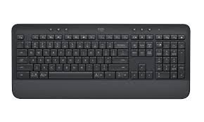
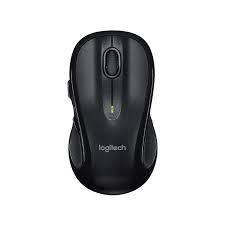
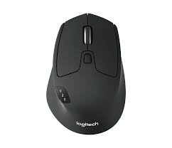

Aucun résultat
Essayez d'autres mots-clés, ou contactez le support T.I.
Matériel informatique
Écouteurs, claviers, souris et laptop : chaque fiche est organisée du plus simple au plus technique.
Écouteurs
Choisissez la fiche correspondant à votre modèle. Si vous ne savez pas lequel vous avez, regardez la marque imprimée sur le casque.
Logitech Logitech Zone Wireless : pas de son, micro coupé ou déconnexions
Les écouteurs Logitech Zone Wireless se connectent à votre ordinateur grâce à un petit récepteur USB (la « clé Logi Zone ») branché sur le côté du laptop, ou directement par Bluetooth.
- Vérifier que les écouteurs sont allumés. Sur l'écouteur droit, repérez le petit interrupteur. Glissez-le vers la droite. Vous devez entendre un petit son et voir une lumière s'allumer brièvement.
- Vérifier la charge. Si le voyant clignote rouge, posez les écouteurs sur leur base de chargement ou branchez le câble USB-C (le câble livré avec le casque) pendant au moins 15 minutes.
- Vérifier que le bon casque est sélectionné dans Windows. En bas à droite de votre écran, cliquez sur l'icône en forme de haut-parleur. Une liste apparaît : choisissez « Logi Zone Wireless ». Sur Mac : cliquez sur l'icône haut-parleur en haut à droite.
- Tourner la molette de volume. Sur l'écouteur droit, il y a une bague qui tourne. Tournez-la vers le haut pour augmenter le volume — elle est souvent au minimum sans qu'on le réalise.
- Choisir le casque dans Teams ou Zoom. Dans Teams : cliquez sur les trois petits points (⋯) en haut à droite de la fenêtre Teams, puis sur « Paramètres », puis sur « Périphériques » à gauche. Dans la section « Haut-parleur » ET dans la section « Microphone », choisissez « Logi Zone Wireless ». Cliquez ensuite sur « Effectuer un appel test » pour vérifier.
- Débrancher puis rebrancher la clé USB. Repérez la petite clé USB grise sur le côté de votre laptop (elle a un petit logo Logitech). Retirez-la délicatement, comptez jusqu'à 10, puis rebranchez-la, idéalement dans un port USB différent.
- Réinitialiser le casque. Les écouteurs étant allumés, maintenez en même temps le gros bouton « Décrocher » (au centre de l'écouteur droit) ET le bouton « Volume — » pendant 5 secondes. Vous entendrez un signal sonore de confirmation.
- Réappairer la clé. Ouvrez l'application « Logi Tune » sur votre ordinateur (icône avec un casque et trois traits). Sélectionnez votre casque, puis cliquez sur « Pair new device ».
- Redémarrer l'ordinateur. Pas seulement fermer le couvercle : un vrai redémarrage (menu Démarrer → bouton d'alimentation → Redémarrer) rétablit le pilote audio dans la grande majorité des cas.
- Mettre à jour le firmware. Dans Logi Tune, ouvrez l'onglet « Updates ». Une mise à jour récente du firmware corrige la majorité des coupures Bluetooth.
- Désinstaller et réinstaller le pilote audio. Faites un clic droit sur l'icône Démarrer (logo Windows) → « Gestionnaire de périphériques » → ouvrir « Contrôleurs audio, vidéo et jeu » → clic droit sur « Logi Zone Wireless » → « Désinstaller l'appareil » → redémarrer le PC.
- Si rien ne fonctionne : contactez le support T.I. avec le numéro de série du casque (sous l'écouteur gauche).
Poly Poly Voyager 4320 UC : casque qui ne s'allume pas ou ne s'appaire plus
Le Voyager 4320 UC se branche à l'ordinateur via le petit récepteur USB « BT700 » (la clé fournie avec le casque). Il peut aussi se connecter directement à un téléphone en Bluetooth.
- Brancher le casque pour le recharger. Utilisez le câble USB-C livré avec le casque. Branchez-le directement à votre ordinateur ou à une prise murale, pendant au moins 30 minutes. La LED devient rouge fixe pendant la charge.
- Allumer le casque. Glissez le bouton « Power » (sur la tranche de l'écouteur) vers la position ON (vers le rond). Une voix dans le casque dira « Power on ».
- Vérifier que la clé USB est branchée. Repérez la petite clé USB « BT700 » sur votre laptop. Une lumière bleue fixe = tout est connecté. Si elle ne s'allume pas, débranchez-la et rebranchez-la sur un autre port USB.
- Choisir le casque dans Windows. Cliquez sur l'icône haut-parleur en bas à droite, puis sélectionnez « Poly BT700 ».
- Forcer un nouvel appairage. Sur le casque, maintenez le bouton « Call » (le gros bouton central) jusqu'à entendre « Pairing ». Sur la clé BT700, enfoncez son petit bouton pendant 4 secondes. Le casque annoncera « Pairing successful ».
- Vérifier dans Teams. Trois petits points (⋯) en haut de Teams → « Paramètres » → « Périphériques ». Choisissez « Poly BT700 » comme haut-parleur ET comme microphone. Cliquez sur « Effectuer un appel test ».
- Mettre à jour avec Poly Lens. Ouvrez l'application « Poly Lens » sur votre ordinateur. Si une mise à jour est proposée pour le casque ou pour la clé, acceptez-la.
- Redémarrer l'ordinateur complètement (menu Démarrer → Redémarrer) après ces étapes.
- Réinitialisation usine via Poly Lens : ouvrez l'application, sélectionnez le casque, puis cliquez sur « Reset device ». Tous les appairages seront effacés.
- Sans Poly Lens : casque allumé, maintenez simultanément les boutons « Volume + » et « Mute » pendant 10 secondes jusqu'au signal sonore.
- Si la clé BT700 n'est plus reconnue du tout : Gestionnaire de périphériques → désinstaller le périphérique → redémarrer. Si toujours rien, contactez le support T.I.
Général Écouteurs (toutes marques) : aucun son alors qu'ils sont connectés
Diagnostic universel quand un casque (peu importe la marque) ne diffuse pas de son. À faire dans l'ordre.
- Augmenter le volume Windows. Cliquez sur l'icône haut-parleur en bas à droite. Glissez la barre de volume au moins à 60 %.
- Augmenter le volume de l'application qui joue le son (Teams, navigateur, YouTube…). Beaucoup d'apps ont leur propre volume séparé.
- Vérifier qu'il n'y a pas un bouton sourdine sur le casque ou sur le fil — souvent un petit interrupteur ou un bouton « Mute » avec une icône de micro barré.
- Tester avec un autre son. Lancez une vidéo YouTube ou une chanson. Si ça marche là mais pas dans votre app, le problème vient de l'app pas du casque.
- Vérifier la sortie audio par défaut. Cliquez sur l'icône haut-parleur. Une liste apparaît avec tous les appareils audio. Cliquez sur votre casque pour le sélectionner.
- Tester le casque sur un autre appareil. Branchez-le sur votre téléphone ou un autre ordinateur. S'il fonctionne ailleurs, le problème vient de votre ordinateur, pas du casque.
- Tester un autre câble ou un autre port USB. Un câble USB-C abîmé est une cause très fréquente.
- Redémarrer l'ordinateur complètement (pas juste fermer le couvercle).
- Débrancher tous les autres périphériques audio (écran HDMI, deuxième casque, etc.) qui peuvent voler le son.
- Désinstaller puis réinstaller le pilote audio. Clic droit sur le menu Démarrer → « Gestionnaire de périphériques » → ouvrir « Contrôleurs audio, vidéo et jeu » → clic droit sur le casque → « Désinstaller l'appareil » → redémarrer (Windows réinstalle automatiquement).
- Redémarrer le service audio. Touches Win+R, taper
services.msc, trouver « Windows Audio », clic droit → « Redémarrer ». - Si tout échoue : contactez le support T.I. avec la marque et le modèle exact du casque, plus la liste de ce que vous avez déjà tenté.
Son général
Quand vous travaillez sans casque — haut-parleurs intégrés du laptop, micro intégré, conflits audio courants.
Haut-parleurs Aucun son ne sort des haut-parleurs du laptop
Le laptop ne joue plus aucun son sur ses haut-parleurs intégrés alors qu'aucun casque n'est branché. À faire dans l'ordre.
- Vérifier le volume Windows. Cliquez sur l'icône haut-parleur en bas à droite. Glissez la barre au moins à 60 %. Vérifiez aussi que l'icône n'a pas une petite croix rouge — ce serait la sourdine.
- Vérifier les touches volume du clavier. En haut du clavier, repérez les touches avec une icône de haut-parleur (souvent F1/F2/F3 ou avec Fn). Une touche « Mute » a pu être pressée par accident.
- Vérifier le volume de l'application. Teams, Chrome, YouTube ont leur propre curseur de volume séparé. Augmentez-le aussi.
- Vérifier qu'aucun casque ou câble audio n'est branché. Si une vieille fiche jack reste dans la prise écouteurs, Windows pense qu'un casque est connecté et coupe les haut-parleurs.
- Tester avec un autre son. Lancez une vidéo YouTube ou une musique. Si ça marche là mais pas dans votre app, le problème vient de l'app pas des haut-parleurs.
- Sélectionner les haut-parleurs comme sortie par défaut. Cliquez sur l'icône haut-parleur en bas à droite, puis sur la petite flèche « ˅ » à côté du volume. Une liste de tous les appareils audio apparaît. Cliquez sur « Haut-parleurs » ou « Realtek Audio » (ou similaire).
- Le son part vers votre écran externe ? Si vous avez branché un écran via HDMI ou USB-C, Windows envoie souvent le son par défaut vers cet écran (qui n'a pas de haut-parleurs). Dans la liste de sortie audio, choisissez explicitement « Haut-parleurs » plutôt que « Affichage Intel » ou le nom de l'écran.
- Vérifier la sortie dans Teams ou Zoom. Dans Teams : trois petits points (⋯) en haut à droite → « Paramètres » → « Périphériques » → section « Haut-parleur ». Choisissez « Haut-parleurs (Realtek) » ou équivalent, puis « Effectuer un appel test ».
- Débrancher la station d'accueil. Une station d'accueil peut détourner le son vers une sortie audio qui n'existe pas. Débranchez-la temporairement pour tester.
- Redémarrer l'ordinateur complètement (pas juste fermer le couvercle). Règle 70 % des problèmes audio.
- Lancer le dépanneur audio Windows. Clic droit sur l'icône haut-parleur en bas à droite → « Résoudre les problèmes de son ». Windows va tester automatiquement plusieurs causes.
- Redémarrer le service audio. Touches Win+R, taper
services.mscpuis Entrée. Dans la liste, trouvez « Windows Audio », clic droit → « Redémarrer ». Faites pareil pour « Windows Audio Endpoint Builder ». - Désinstaller et réinstaller le pilote audio. Clic droit Démarrer → « Gestionnaire de périphériques » → ouvrir « Contrôleurs audio, vidéo et jeu » → clic droit sur « Realtek Audio » (ou similaire) → « Désinstaller l'appareil ». Redémarrer. Windows réinstalle automatiquement le pilote au démarrage.
- Désactiver les améliorations audio. Clic droit haut-parleur → « Paramètres son » → cliquer sur « Haut-parleurs » → « Améliorations audio » → mettre sur « Désactivé ». Dolby/spatial sound peut casser la sortie sur certains laptops.
- Si rien ne marche : contactez le support T.I. avec le modèle exact du laptop et la liste de ce que vous avez déjà tenté.
Micro intégré Le micro intégré du laptop ne capte rien en réunion
Vous participez à une réunion Teams sans casque, mais personne ne vous entend. Diagnostic complet du micro intégré.
- Vérifier que vous n'êtes pas en sourdine dans la réunion. Dans Teams, l'icône micro en bas doit être sans barre rouge. Cliquez dessus pour activer.
- Vérifier la touche micro du clavier. Beaucoup de laptops ont une touche dédiée micro (souvent F4, F5, ou avec Fn) avec une icône de micro barré. Une LED rouge sur la touche = micro coupé matériellement.
- Vérifier que personne d'autre n'utilise le micro. Une autre app ouverte (Skype, navigateur en visio) peut accaparer le micro. Fermez tout sauf Teams.
- Tester votre micro dans Teams. Trois petits points (⋯) en haut → « Paramètres » → « Périphériques » → bouton « Effectuer un appel test ». Vous parlez 10 secondes, Teams vous rejoue l'enregistrement.
- Autoriser l'accès au micro pour les applications. Menu Démarrer → « Paramètres » → « Confidentialité et sécurité » → « Microphone ». Activez « Autoriser les applications à accéder à votre microphone » ET vérifiez que Teams, Chrome (si visio web) sont activés en bas de la liste.
- Choisir le bon micro dans Teams. Paramètres → « Périphériques » → section « Microphone ». Choisissez « Réseau de microphones (Realtek) » ou « Microphone interne ». Pas « Microphone (HDMI) » ni un appareil débranché.
- Vérifier le niveau d'entrée Windows. Clic droit haut-parleur → « Paramètres son » → faites défiler jusqu'à « Entrée » → cliquez sur le micro → vérifiez que le « Volume d'entrée » n'est pas à 0. Parlez : la barre bleue doit bouger.
- Débrancher les autres périphériques audio. Si un écran HDMI ou une station d'accueil affichent un micro fantôme, Windows peut le sélectionner par erreur.
- Redémarrer l'ordinateur complètement.
- Désinstaller et réinstaller le pilote micro. Clic droit Démarrer → « Gestionnaire de périphériques » → ouvrir « Entrées et sorties audio » → clic droit sur « Réseau de microphones » → « Désinstaller l'appareil ». Redémarrer.
- Désactiver les améliorations micro. Clic droit haut-parleur → « Paramètres son » → « Entrée » → cliquer sur le micro → faire défiler → « Améliorations audio » sur « Désactivé ». Les filtres anti-bruit trop agressifs peuvent couper la voix.
- Vérifier la confidentialité matérielle. Certains laptops (Dell, HP, Lenovo) ont un interrupteur physique micro sur le côté ou via Fn+F4. Vérifiez aussi l'utilitaire constructeur (Dell Optimizer, HP Support Assistant) qui peut couper le micro en mode confidentialité.
- Si rien ne marche : contactez le support T.I. avec le modèle du laptop. En attendant, branchez un casque avec micro (filaire ou Bluetooth) — c'est généralement plus fiable que le micro intégré.
Clavier
Que votre clavier soit branché par fil, par Bluetooth ou par récepteur USB.
Logitech K650 Clavier Logitech K650 : touches qui ne répondent plus ou déconnexions

Le K650 est un clavier sans fil silencieux à pleine taille avec pavé numérique et repose-poignets intégré. Il se connecte à l'ordinateur en Bluetooth ou via le récepteur USB Logi Bolt fourni. Il fonctionne avec 2 piles AA (livrées dans le clavier).
- Allumer le clavier. Sous le clavier, repérez le petit interrupteur ON/OFF. Glissez-le sur ON. Une lumière s'allume brièvement au-dessus des touches.
- Vérifier les piles. Le K650 utilise 2 piles AA. Ouvrez le compartiment situé sous le clavier (couvercle qui se glisse), et remplacez-les si le clavier répond mal ou ne s'allume plus.
- Choisir le bon appareil. En haut du clavier, les touches F1, F2, F3 servent à basculer entre plusieurs appareils appairés. Appuyez sur celle qui correspond à votre ordinateur.
- Tester sur une autre fenêtre. Ouvrez le Bloc-notes ou Word et tapez quelques lettres. Si ça marche là mais pas dans votre app, le problème vient de l'app pas du clavier.
- Mettre le K650 en mode appairage. Maintenez la touche F1 (ou F2/F3 selon la place voulue) enfoncée pendant 3 secondes. La petite lumière au-dessus de la touche se met à clignoter rapidement.
- Lancer la recherche dans Windows. Menu Démarrer → « Paramètres » → « Bluetooth et appareils » → « Ajouter un appareil » → « Bluetooth ». Choisissez « Logitech K650 » dans la liste.
- Avec le récepteur Logi Bolt (petit dongle USB gris fourni) : installez « Logi Options+ », cliquez sur « Add device » et suivez les étapes. Le récepteur évite les coupures Bluetooth.
- Vérifier la disposition. Si certaines touches tapent les mauvais caractères : Paramètres → « Heure et langue » → « Langue et région ». Vérifier que la disposition est bien « Canadien français » ou « Français Canada ».
- Mettre à jour le firmware dans Logi Options+ : sélectionnez le K650, puis onglet « Updates ».
- Supprimer l'ancienne paire dans Bluetooth Windows (Paramètres → Bluetooth → cliquer sur « Logitech K650 » → trois points → Supprimer) avant de réappairer.
- Réinstaller Logi Options+ si l'application elle-même semble figée.
Bluetooth Clavier Bluetooth générique : ne s'appaire pas ou se déconnecte sans cesse
- Activer le Bluetooth sur l'ordinateur. Sur Windows : cliquez en bas à droite sur l'icône réseau/son. Une tuile « Bluetooth » apparaît, cliquez dessus pour qu'elle devienne bleue.
- Mettre le clavier en mode appairage. Cherchez un bouton avec une petite icône Bluetooth (symbole en forme de « B » stylisé). Maintenez-le 3 à 5 secondes jusqu'à ce que sa lumière clignote.
- Ajouter l'appareil. Menu Démarrer → « Paramètres » → « Bluetooth et appareils » → « Ajouter un appareil » → « Bluetooth ». Cliquez sur votre clavier quand il apparaît dans la liste.
- Si on vous demande un code, tapez les chiffres affichés sur l'écran directement sur le clavier puis appuyez sur Entrée.
- Oublier puis ré-appairer. Paramètres → Bluetooth → cliquez sur votre clavier → trois petits points → « Supprimer l'appareil ». Recommencez ensuite l'appairage depuis zéro.
- Éloigner les sources d'interférences. Téléphones, hubs USB 3.0, écrans externes — déplacez le clavier d'au moins 30 cm de ces objets.
- Recharger ou remplacer les piles : un niveau bas cause souvent des coupures avant la panne complète.
- Tester sur un autre ordinateur. Si le clavier fonctionne ailleurs, le problème vient de votre ordinateur.
- Redémarrer le service Bluetooth. Touches Win+R, taper
services.msc, trouver « Service de prise en charge Bluetooth », clic droit → « Redémarrer ». - Mettre à jour le pilote Bluetooth. Clic droit Démarrer → Gestionnaire de périphériques → ouvrir « Bluetooth » → clic droit sur l'adaptateur → « Mettre à jour le pilote ».
- Réinitialiser la pile Bluetooth en désinstallant l'adaptateur puis en redémarrant le PC (Windows réinstalle automatiquement).
Souris
Pointeur saccadé, clic qui ne répond pas, déconnexions répétées.
Logitech M510 / M720 Souris Logitech M510 et M720 : pointeur figé, erratique ou déconnexions


M510 : souris sans fil classique. Fonctionne uniquement avec son récepteur USB Unifying (petit dongle orange/noir). Pile AA (1 ou 2 selon le modèle).
M720 Triathlon : souris multi-appareils. Trois boutons numérotés 1-2-3 sous le bouton de molette pour basculer entre 3 ordinateurs (Bluetooth ou Unifying). 1 pile AA.
- Allumer la souris. Retournez-la : sous la souris se trouve un petit interrupteur ON/OFF. Glissez-le sur ON. Une lumière verte s'allume brièvement.
- Changer la pile. Ces deux modèles fonctionnent avec des piles AA (non rechargeables). Si le pointeur saute ou disparaît, c'est presque toujours la pile. Le compartiment se trouve sous la souris (couvercle qui se glisse ou s'enlève par pression).
- Vérifier le récepteur Unifying. Le M510 ne marche QUE avec son petit récepteur USB. Vérifiez qu'il est bien branché sur le laptop. Essayez un autre port USB.
- M720 : vérifier l'appareil sélectionné. Sous la molette, trois boutons numérotés 1-2-3 permettent de basculer entre 3 ordinateurs. Appuyez sur le numéro correspondant à votre ordinateur.
- Tester sur une autre surface. Posez la souris sur une feuille de papier ou sur un livre. Si le pointeur bouge mieux, la surface du bureau est en cause (verre, surfaces très brillantes).
- M510 — Réappairer le récepteur Unifying. Téléchargez « Logitech Unifying Software » (ou « Logi Options+ » qui le remplace). Branchez le récepteur, ouvrez l'app, cliquez sur « Add device », éteignez puis rallumez la souris.
- M720 — Réappairer en Bluetooth. Maintenez l'un des boutons 1, 2 ou 3 sous la molette pendant 3 secondes jusqu'à ce que la lumière clignote rapidement. Paramètres → Bluetooth → « Ajouter un appareil » → cliquez sur « M720 Triathlon » dans la liste.
- M720 — Réappairer avec Unifying. Vous pouvez aussi utiliser le même récepteur Unifying que le M510 via Logi Options+ → « Add device ».
- Brancher le récepteur USB sur un port USB 2.0 (port noir, pas bleu) — les ports USB 3.0 bleus créent souvent des interférences avec les périphériques sans fil 2.4 GHz.
- Redémarrer l'ordinateur complètement (pas juste fermer le couvercle).
- Mettre à jour le firmware dans Logi Options+, onglet « Updates ».
- Désinstaller puis réinstaller Logi Options+ si l'application elle-même se comporte mal.
- Nettoyer la lentille optique sous la souris avec un chiffon sec — une poussière minuscule suffit à dérégler le pointeur.
- Tester sur un autre ordinateur pour confirmer que la souris elle-même fonctionne. Si oui, le problème vient du PC (pilote ou interférence).
Bluetooth Souris Bluetooth générique : clic qui rate, défilement absent ou perte de connexion
- Changer ou recharger les piles. Une pile faible provoque des sauts du pointeur avant la panne complète. Ouvrez le compartiment au dos de la souris.
- Nettoyer le capteur. Retournez la souris : il y a une petite lentille en dessous. Soufflez doucement dessus ou essuyez-la avec un tissu sec et propre. Une poussière minuscule suffit à dérégler le pointeur.
- Changer de surface. Le verre, le bois très brillant et les surfaces transparentes ne fonctionnent pas. Utilisez un tapis de souris ou une simple feuille de papier blanche.
- Vérifier le bouton ON/OFF sous la souris.
- Mettre la souris en mode appairage. Maintenez le bouton dédié (souvent un petit bouton avec une icône Bluetooth) 3 secondes.
- Oublier l'ancien appairage. Paramètres → Bluetooth → cliquez sur votre souris → trois petits points → « Supprimer l'appareil ».
- Ré-ajouter. « Ajouter un appareil » → « Bluetooth » → cliquer sur la souris dans la liste.
- Si la souris a un récepteur USB : branchez-le sur un port USB 2.0 (souvent un port noir, pas bleu) — les ports USB 3.0 bleus peuvent provoquer des interférences.
- Mettre à jour le pilote Bluetooth. Clic droit Démarrer → Gestionnaire de périphériques → « Bluetooth » → clic droit sur l'adaptateur → « Mettre à jour le pilote ».
- Réinitialiser la souris selon les instructions du fabricant (souvent en maintenant un bouton spécifique).
- Tester sur un autre PC pour confirmer que la souris elle-même fonctionne.
Laptop
Bonnes pratiques quotidiennes et dix fiches pour cerner et corriger la plupart des problèmes de votre ordinateur portable.
Bonnes pratiques Habitudes quotidiennes pour garder un laptop rapide, sûr et durable
La majorité des incidents support T.I. (lenteur, plantages, déconnexions) viennent d'habitudes à ajuster, pas d'un matériel défectueux. Voici les réflexes à adopter.
- Éteindre complètement l'ordinateur en fin de journée. Pas juste fermer le couvercle (qui le met en veille). Menu Démarrer → bouton d'alimentation → « Arrêter ». Cela vide la mémoire, applique les mises à jour en attente et prolonge la durée de vie de la batterie.
Menu Démarrer → bouton d’alimentation → « Arrêter » - Redémarrer au moins une fois par semaine. Un vrai redémarrage (Démarrer → « Redémarrer ») règle 60 % à 80 % des bizarreries logicielles. C'est le geste de maintenance le plus efficace qui existe.
- Fermer les applications inutilisées. Cliquez sur la croix rouge en haut à droite — pas seulement réduire (le tiret). Une appli réduite continue de consommer mémoire et batterie.
Cliquer la croix rouge (fermer) — pas le tiret (réduire) - Limiter les onglets de navigateur. Visez moins de 10 onglets ouverts simultanément dans Chrome ou Edge. Au-delà, le laptop ralentit visiblement. Utilisez les favoris pour ce que vous voulez « garder pour plus tard ».
Limiter à moins de 10 onglets dans Chrome / Edge - Verrouiller la session quand vous quittez votre poste. Touches Win+L (Windows) ou Ctrl+Cmd+Q (Mac). Obligatoire en espace partagé ou en télétravail si quelqu'un peut passer derrière vous.
Verrouiller la session : touches Win + L - Sauvegarder dans OneDrive, pas sur le Bureau. Tout ce qui est sur le Bureau ou dans « Mes documents » sans OneDrive activé est perdu si le laptop tombe en panne. Voir OneDrive.
- Accepter les mises à jour Windows. Quand Windows affiche « Mettre à jour et redémarrer » dans le menu d'alimentation, faites-le le soir avant de partir. Ne reportez jamais plus de 3 fois — les mises à jour contiennent les correctifs de sécurité.
- Forcer une vérification. Menu Démarrer → « Paramètres » → « Windows Update » → « Rechercher des mises à jour ». À faire une fois par mois si vous éteignez peu votre laptop.
Paramètres → Windows Update → Rechercher des mises à jour - Mettre à jour les pilotes. Windows Update inclut généralement les pilotes essentiels. Pour les pilotes constructeur (Dell, HP, Lenovo), utilisez l'utilitaire fourni (« Dell Command Update », « HP Support Assistant », « Lenovo Vantage »).
- Mettre à jour vos applications. Outlook, Teams, Chrome et Edge se mettent à jour seuls, mais nécessitent d'être fermés puis rouverts pour appliquer la mise à jour. Si Teams demande « Mettre à jour », acceptez.
- Logi Options+ pour les périphériques Logitech. Ouvrez l'app, onglet « Updates » : appliquez les mises à jour de firmware de votre clavier, souris ou casque. Ça règle la majorité des coupures Bluetooth.
Logi Options+ → onglet « Updates » → appliquer le firmware
- Ne jamais bloquer les grilles d'aération. Sur un lit, un coussin ou un canapé, le laptop surchauffe en quelques minutes. Utilisez un support rigide (plateau, livre, support laptop) si vous travaillez hors bureau.
- Décharger la batterie de temps en temps. Si votre laptop reste toujours branché à 100 %, débranchez-le une fois par semaine et utilisez-le sur batterie jusqu'à 30-40 % avant de le rebrancher. Ça prolonge la durée de vie de la batterie.
- Nettoyer le clavier et l'écran régulièrement. Chiffon en microfibre légèrement humide (jamais directement vaporiser sur l'écran). Pas de produit ménager — l'alcool isopropylique à 70 % est sûr pour l'écran et le clavier.
- Ne jamais boire ou manger au-dessus du clavier. Un café renversé = carte mère grillée dans 70 % des cas. Aucun support T.I. ne peut récupérer un laptop noyé.
- Transporter dans une housse rembourrée. Même dans un sac à dos « ordinateur portable », ajoutez une housse. Les chocs répétés finissent par endommager le disque SSD et l'écran.
- Sauvegarder régulièrement. OneDrive sauvegarde automatiquement vos fichiers — vérifiez l'icône bleue dans la barre des tâches : si elle a un cercle rouge, la sync est en panne (voir OneDrive).
Démarrage L'ordinateur ne démarre pas ou reste sur un écran noir
- Vérifier que le chargeur est branché. Branchez votre chargeur à la prise murale ET à l'ordinateur. Une petite lumière (souvent à côté du port de charge) doit s'allumer.
Brancher le chargeur — un voyant doit s’allumer - Tester une autre prise murale. Une prise défectueuse est plus fréquente qu'on le pense.
- Appuyer fermement sur le bouton d'alimentation pendant 2 secondes (pas plus). Le bouton est généralement au-dessus du clavier ou sur la tranche.
- Augmenter la luminosité. Cherchez sur le clavier les touches avec une icône de soleil. Appuyez plusieurs fois pour augmenter — il arrive que l'écran soit allumé mais à zéro de luminosité.
- Débrancher tout : chargeur, souris, clé USB, écran externe, casque… Ne gardez que le laptop seul.
- Maintenir le bouton d'alimentation enfoncé pendant 30 secondes. Même si l'écran reste noir, continuez. Cela vide l'électricité résiduelle.
Maintenir le bouton d’alimentation 30 s (décharge résiduelle) - Rebrancher uniquement le chargeur. Attendre 1 minute.
- Appuyer normalement sur le bouton d'alimentation pour rallumer.
- Brancher un écran externe (par câble HDMI) si vous en avez un. Si l'image s'affiche dessus, c'est l'écran interne du laptop qui est en panne, pas l'ordinateur lui-même.
Brancher un écran externe (HDMI) pour tester l’affichage
- Démarrer en mode récupération. Allumez puis interrompez (en appuyant sur le bouton d'alimentation) trois fois de suite. Windows propose alors automatiquement « Récupération » → « Dépannage » → « Options avancées ».
Mode récupération → Dépannage → Options avancées - Lancer la réparation du démarrage. Dans « Options avancées », choisissez « Réparation du démarrage ». Windows tente une réparation automatique.
- Si rien ne fonctionne : contactez le support T.I. avec une description précise (bips, lumières, message d'erreur).
Système Windows ou macOS : écran bleu, écran qui fige, plantage répété
- Noter le message d'erreur. Si un écran bleu apparaît, prenez une photo avec votre téléphone — le message contient des indices essentiels pour le support T.I.
Écran bleu : prenez-le en photo (le code aide le support) - Redémarrer. Menu Démarrer (logo Windows en bas à gauche) → bouton d'alimentation → « Redémarrer ». Pas « Arrêter » : « Redémarrer ».
Menu Démarrer → Alimentation → « Redémarrer » - Fermer toutes les applications avant que le problème ne revienne. Cliquez sur la croix rouge en haut à droite de chaque fenêtre ouverte.
- Mettre à jour Windows. Menu Démarrer → « Paramètres » (l'engrenage) → « Windows Update » → « Rechercher des mises à jour ». Installer tout, y compris les mises à jour facultatives. Redémarrer après.
- Identifier ce qui a changé. Le problème est apparu après l'installation d'une application ? Après une mise à jour ? Cette piste est la plus importante.
- Désinstaller la dernière application installée. Paramètres → « Applications » → « Applications installées ». Trier par date d'installation, désinstaller la plus récente.
Paramètres → Applications installées → trier par date - Désinstaller une mise à jour récente. Paramètres → « Windows Update » → « Historique des mises à jour » → « Désinstaller des mises à jour ».
- Sur Mac : redémarrer en mode sans échec — éteindre, allumer en maintenant la touche ⇧ Shift. Sur Apple Silicon : maintenir le bouton d'alimentation au démarrage jusqu'à voir les options.
- Lancer la vérification de fichiers système. Recherche Windows → tapez « PowerShell » → clic droit → « Exécuter en tant qu'administrateur ». Tapez
sfc /scannowet appuyez sur Entrée. Laisser tourner (jusqu'à 30 minutes).PowerShell (admin) → taper « sfc /scannow » - Réparer l'image système. Dans le même PowerShell :
DISM /Online /Cleanup-Image /RestoreHealth. - Sur Mac : Utilitaire de disque (dans Applications → Utilitaires) → sélectionner le disque → bouton « S.O.S. ».
- Si rien ne fonctionne : contactez le support T.I. avec le code d'erreur exact et la liste de ce que vous avez tenté.
Batterie Batterie qui se vide vite, ne charge plus ou se décharge en veille
- Inspecter le câble du chargeur. Cherchez des coupures, des fils dénudés, une prise tordue. Si le câble est abîmé, demandez un remplacement au support T.I. — ne l'utilisez plus.
Inspecter le câble : coupures, fils dénudés, prise tordue - Tester une autre prise murale pour éliminer ce facteur.
- Vérifier que le voyant de charge s'allume. Quand vous branchez le chargeur, une petite lumière doit apparaître sur le laptop (souvent près du port de charge).
- Nettoyer le port de charge. Avec un cure-dent en bois (jamais en métal), retirez délicatement la poussière coincée dans le port USB-C.
- Passer en mode économie d'énergie. Cliquez sur l'icône de batterie en bas à droite → choisir « Économie d'énergie » ou « Équilibré ».
Icône batterie (bas droite) → « Économie d’énergie » - Diminuer la luminosité de l'écran. Touches du clavier avec icône de soleil.
- Fermer les applications gourmandes. Chrome avec 30 onglets, Teams en arrière-plan, Spotify… ferment-les si vous ne les utilisez pas.
- Calibrer la batterie. Une fois par mois : laisser la batterie se vider jusqu'à extinction complète, puis recharger à 100 % sans interruption.
- Générer un rapport batterie (Windows). Recherche → « PowerShell » → exécuter en admin → taper
powercfg /batteryreport. Un fichier HTML est créé dansC:\Users\VotreNom— ouvrez-le pour voir la capacité résiduelle.PowerShell (admin) → « powercfg /batteryreport » - Sur Mac : Menu Pomme → « À propos de ce Mac » → « Plus d'infos » → « Rapport système » → « Alimentation ».
- Désactiver le démarrage rapide (Windows) : Panneau de configuration → « Options d'alimentation » → « Choisir l'action des boutons » → « Modifier les paramètres actuellement non disponibles » → décocher « Activer le démarrage rapide ».
Surchauffe Le laptop chauffe, ventilateur en continu, ralentissements importants
- Poser l'ordinateur sur une surface dure et plane. Bureau, table, plateau. JAMAIS sur un lit, un coussin ou les genoux : le tissu bloque l'aspiration d'air.
Surface dure et plane — jamais lit, coussin ou genoux - Vérifier les grilles d'aération. Regardez sur les côtés et sous le laptop : il y a de petites grilles. Elles ne doivent pas être obstruées.
- Fermer les onglets et applications inutiles. Si Chrome a 25 onglets ouverts et que Teams, Outlook et Excel tournent en même temps, c'est normal qu'il chauffe.
- Faire une pause de 10 minutes en laissant le laptop refroidir.
- Ouvrir le Gestionnaire des tâches. Touches Ctrl+Shift+Échap. Une fenêtre s'ouvre avec la liste des applications.
Gestionnaire des tâches (Ctrl+Maj+Échap) → trier par CPU - Cliquer sur la colonne « CPU » pour trier par utilisation. Identifiez l'application qui consomme le plus.
- Fermer l'application coupable. Clic droit dessus → « Fin de tâche ». Attention : ne fermez pas les processus système Windows.
- Passer en mode équilibré. Icône batterie en bas à droite → « Équilibré » plutôt que « Performances maximales ».
- Dépoussiérer les grilles d'aération avec une bombe d'air comprimé (jamais d'aspirateur). Demandez au support T.I. si vous n'en avez pas.
- Mettre à jour le BIOS / firmware. Les constructeurs (Dell, HP, Lenovo) publient régulièrement des correctifs de gestion thermique. Cette opération est à faire avec le support T.I. — une mauvaise manipulation peut rendre l'ordinateur inutilisable.
- Vérifier l'état des ventilateurs via des utilitaires constructeur (Dell Support Assist, HP Support Assistant…).
- Si le laptop continue à chauffer anormalement : il peut avoir besoin d'un nettoyage interne (pâte thermique, démontage). C'est une opération pour le support T.I.
Stockage Disque plein, « espace insuffisant », lenteur d'écriture
- Vider la corbeille. Sur le bureau, double-cliquez sur l'icône Corbeille → en haut, cliquez sur « Vider la corbeille ». Vous récupérez souvent plusieurs Go.
Double-clic sur la Corbeille → « Vider la corbeille » - Nettoyer le dossier Téléchargements. Ouvrez l'Explorateur de fichiers (icône dossier jaune dans la barre des tâches) → « Téléchargements » à gauche. Supprimez les fichiers anciens dont vous n'avez plus besoin.
- Voir ce qui prend de la place. Menu Démarrer → « Paramètres » → « Système » → « Stockage ». Windows vous montre quelles catégories occupent le plus.
Paramètres → Système → Stockage (voir ce qui occupe l’espace) - Désinstaller les applications non utilisées. Paramètres → « Applications » → « Applications installées ». Désinstallez ce que vous n'utilisez plus.
- Lancer le nettoyage automatique. Paramètres → « Système » → « Stockage » → cliquez sur « Fichiers temporaires ». Cochez tout sauf « Téléchargements », puis « Supprimer les fichiers ».
Stockage → « Fichiers temporaires » → Supprimer les fichiers - Activer Storage Sense. Paramètres → « Système » → « Stockage » → activez l'interrupteur « Storage Sense ». Windows nettoiera automatiquement les fichiers temporaires.
- Déplacer photos et vidéos vers OneDrive pour libérer l'espace local (voir Synchronisation OneDrive).
- Vider le cache du navigateur. Dans Chrome : trois points en haut à droite → « Plus d'outils » → « Effacer les données de navigation ».
- Installer WinDirStat ou TreeSize Free (sur demande au support T.I.) pour visualiser graphiquement ce qui occupe l'espace.
- Vérifier le dossier WinSxS et les fichiers temporaires système avec « Nettoyage de disque » (recherche Windows → « Nettoyage de disque ») en mode admin.
- Demander une migration vers un disque plus grand si le disque est constamment plein malgré le nettoyage.
Matériel Pavé tactile, clavier intégré, touche bloquée ou haut-parleur muet
- Pavé tactile inactif : regardez sur le clavier, il y a souvent une touche avec une icône de pavé tactile barré (souvent F6, F7 ou F9). Appuyez en maintenant Fn.
Touche Fn + icône pavé tactile barré (souvent F6/F7/F9) - Touche bloquée : retournez délicatement le laptop, secouez doucement, puis nettoyez la touche avec une bombe d'air comprimé. Ne retirez jamais les capuchons de touches vous-même.
- Haut-parleur muet : vérifiez que le casque n'est pas branché et que rien d'autre n'est connecté en HDMI. Cliquez sur l'icône haut-parleur en bas à droite, augmentez le volume, choisissez « Haut-parleurs internes ».
Icône haut-parleur → monter le volume → « Haut-parleurs internes » - Clavier qui tape de mauvais caractères : appuyez sur la touche Caps Lock (verrouillage majuscules) si elle est allumée.
- Pavé tactile : Paramètres → « Bluetooth et appareils » → « Pavé tactile ». Activer l'interrupteur.
- Disposition du clavier : Paramètres → « Heure et langue » → « Langue et région ». Vérifier que « Canadien français » est sélectionné. Cliquer dessus → « Options de langue » → vérifier la disposition.
- Haut-parleur : clic droit sur l'icône haut-parleur → « Sons » → onglet « Lecture ». Vérifier que les haut-parleurs internes sont activés et définis par défaut.
- Tester avec un clavier externe pour confirmer si le problème vient du clavier intégré ou du système.
- Réinstaller le pilote du pavé tactile. Gestionnaire de périphériques → « Souris et autres périphériques de pointage » → clic droit → « Désinstaller ». Redémarrer.
Gestionnaire de périphériques → clic droit → « Désinstaller » - Réinstaller le pilote audio. Gestionnaire de périphériques → « Contrôleurs audio, vidéo et jeu » → clic droit sur le haut-parleur → « Désinstaller ». Redémarrer.
- Diagnostic constructeur via Dell Support Assist, HP Support Assistant ou Lenovo Vantage.
Réseau Wi-Fi déconnecté, Internet lent ou carte réseau absente
- Vérifier que le Wi-Fi est activé. Cliquez sur l'icône réseau en bas à droite (forme de wifi ou de globe). Si le Wi-Fi est éteint, cliquez sur la tuile « Wi-Fi » pour l'activer (elle devient bleue).
Icône réseau (bas droite) → activer la tuile « Wi-Fi » - Vérifier que le mode avion est désactivé. Dans le même menu, la tuile « Mode avion » ne doit pas être bleue. Sur le clavier, parfois une touche Fn+F2 active le mode avion par erreur.
- Choisir le bon réseau. Cliquez sur la liste de réseaux et sélectionnez le vôtre. Entrez le mot de passe si demandé.
- Tester avec votre téléphone. Si votre téléphone n'a pas Internet non plus sur le même réseau, c'est la box qui a un problème, pas votre laptop.
- Oublier le réseau puis le rajouter. Paramètres → « Réseau et Internet » → « Wi-Fi » → « Gérer les réseaux connus » → cliquer sur votre réseau → « Oublier ». Puis reconnectez-vous avec le mot de passe.
- Redémarrer la box/le routeur. Débrancher la prise électrique, attendre 30 secondes, rebrancher. Patienter 3 minutes pour que la box redémarre.
- Tester en partage de connexion depuis votre téléphone pour confirmer que le problème vient bien du réseau Wi-Fi habituel.
- Désactiver le VPN ExpressVPN temporairement pour vérifier s'il bloque la connexion.
- Vider le cache DNS. Recherche → « PowerShell » → admin → taper
ipconfig /flushdns, puisipconfig /release, puisipconfig /renew.PowerShell (admin) → ipconfig /flushdns → /release → /renew - Réinitialiser la pile réseau. Paramètres → « Réseau et Internet » → « Paramètres réseau avancés » → « Réinitialisation du réseau » → « Réinitialiser maintenant ». Le PC redémarre.
- Carte réseau absente du Gestionnaire de périphériques : elle peut être désactivée dans le BIOS — contactez le support T.I.
Ports Port USB inactif, HDMI qui ne détecte pas l'écran, station d'accueil capricieuse
- Tester un autre port USB sur le laptop. Si l'autre port fonctionne, c'est juste le port d'origine qui a un problème.
- Tester un autre câble. Un câble HDMI ou USB-C abîmé est extrêmement courant — empruntez-en un autre pour vérifier.
- Vérifier l'entrée de l'écran externe. Sur l'écran, appuyez sur le bouton « Source » ou « Input » pour basculer entre HDMI 1, HDMI 2, DisplayPort, etc.
Sur l’écran externe : bouton « Source » → bon HDMI/DisplayPort - Touches d'affichage. Appuyez sur Win+P (Windows + lettre P). Un menu apparaît : choisissez « Étendre » ou « Dupliquer ».
Touches Win + P → choisir « Étendre » ou « Dupliquer »
- Réinitialiser la station d'accueil. Débrancher la station du laptop, débrancher son alimentation, attendre 30 secondes, rebrancher l'alimentation d'abord, puis le câble vers le laptop.
Réinitialiser la station : débrancher, attendre 30 s, rebrancher - Tester sans la station. Branchez l'écran directement au laptop avec un câble HDMI ou USB-C. Si ça marche, le problème est dans la station d'accueil.
- Vérifier les pilotes. Gestionnaire de périphériques → cherchez des points d'exclamation jaunes sur les périphériques USB.
- Mettre à jour le firmware de la station via l'utilitaire constructeur (Dell, HP, Lenovo, Logitech).
- Réinstaller les pilotes USB. Gestionnaire de périphériques → « Contrôleurs de bus USB » → clic droit sur chaque « Concentrateur USB racine » → « Désinstaller l'appareil ». Redémarrer.
- Gestion d'alimentation USB. Clic droit sur chaque hub USB → Propriétés → onglet « Gestion de l'alimentation » → décocher « Autoriser l'ordinateur à éteindre ce périphérique ».
- Mise à jour BIOS si la station est récente et le BIOS ancien — à faire avec le support T.I.
Performance Tout est lent : démarrage, ouverture d'applications, frappe au clavier
- Redémarrer (pas juste fermer le couvercle). Menu Démarrer → bouton d'alimentation → « Redémarrer ». Idéalement une fois par semaine, c'est la maintenance la plus efficace qui existe.
Le réflexe gagnant : Démarrer → Alimentation → Redémarrer - Fermer les applications inutiles. Cliquez sur la croix rouge en haut à droite des fenêtres que vous n'utilisez plus.
- Fermer les onglets de Chrome. Chaque onglet consomme de la mémoire. Gardez-en moins de 10 ouverts simultanément.
- Vérifier qu'aucun téléchargement n'est en cours (icône de flèche descendante dans Chrome ou dans l'Explorateur de fichiers).
- Ouvrir le Gestionnaire des tâches. Touches Ctrl+Shift+Échap.
- Trier par CPU et par Mémoire. Cliquez sur les en-têtes de colonne pour identifier l'application gourmande.
- Désactiver les applications au démarrage. Dans le Gestionnaire des tâches → onglet « Applications de démarrage » → clic droit → « Désactiver » sur tout ce qui n'est pas essentiel (gardez OneDrive, Teams, antivirus activés).
Gestionnaire des tâches → « Applications de démarrage » → Désactiver - Libérer de l'espace disque. Sous 10 % d'espace libre, le système ralentit drastiquement (voir Stockage).
- Mettre à jour Windows et les pilotes.
- Lancer un scan antivirus complet. Recherche → « Sécurité Windows » → « Protection contre les virus et menaces » → « Options d'analyse » → « Analyse complète ».
Sécurité Windows → Protection virus → « Analyse complète » - Vérifier la santé du disque. PowerShell admin →
chkdsk C: /f(programmera une vérification au prochain redémarrage). - Réinitialiser Windows (en gardant les fichiers). Dernière option avant remplacement — à faire avec le support T.I.
Applications de travail
Cette section couvre les pannes courantes. Pour apprendre à mieux utiliser ces apps (raccourcis, signature, règles, etc.), voir la section 06 — Bien utiliser la Suite Office.
Asana Asana : pages qui ne chargent pas, notifications absentes, lenteurs
- Actualiser la page. Cliquez sur l'icône de rafraîchissement à gauche de la barre d'adresse, ou appuyez sur la touche F5 du clavier.
- Vérifier votre connexion Internet. Ouvrez un autre site web (google.com) pour vérifier que Internet fonctionne.
- Se déconnecter et se reconnecter. Dans Asana, cliquez sur votre photo de profil en haut à droite → « Se déconnecter ». Puis reconnectez-vous.
- Vérifier le dossier Indésirables d'Outlook pour les notifications par email manquantes.
- Vider le cache du navigateur. Dans Chrome : touches Ctrl+Shift+Suppr. Une fenêtre s'ouvre. Choisir « Dernière heure », cocher « Cookies et autres données » et « Images et fichiers en cache », cliquer « Effacer les données ».
- Tester en navigation privée. Touches Ctrl+Shift+N. Une fenêtre sombre s'ouvre. Connectez-vous à Asana depuis cette fenêtre. Si tout fonctionne, le problème vient d'une extension Chrome.
- Désactiver les extensions. Barre d'adresse → tapez
chrome://extensions→ désactivez les ad-blockers et autres extensions une à une. - Vérifier l'état du service Asana en allant sur trust.asana.com. Si une panne globale est en cours, il faut attendre.
- Vérifier vos préférences de notification. Dans Asana : photo de profil → « Mes paramètres » → onglet « Notifications ». Vérifier que les options email sont activées pour les types de notification voulus.
- Sur l'app mobile : appuyez longuement sur l'icône Asana → « Infos sur l'application » → « Stockage » → « Vider le cache » (Android). Sur iOS, désinstallez et réinstallez l'app.
- Si rien ne fonctionne : contactez le support T.I. avec une capture du message d'erreur (touche Impr écran) et l'URL de la page qui pose problème.
Suite Office — dépannage
Pannes courantes des applications Microsoft 365. Pour les astuces d'utilisation, voir la section 06.
Word Word : document qui ne s'ouvre pas, plante au démarrage, mise en forme perdue
- Fermer Word complètement. Cliquer sur la croix rouge en haut à droite. Si Word ne répond plus : touches Ctrl+Alt+Suppr → « Gestionnaire des tâches » → trouver Word → « Fin de tâche ».
- Rouvrir Word et essayer d'ouvrir un autre document Word pour voir si le problème vient d'un document précis ou de Word lui-même.
- Récupération automatique. Quand Word redémarre, il propose souvent à gauche une liste de documents récupérés. Cliquer sur celui qui vous intéresse.
- Redémarrer l'ordinateur si Word continue à planter.
- Ouvrir Word en mode sans échec. Touches Win+R, taper exactement
winword /safepuis OK. Si Word s'ouvre, un complément est en cause. - Désactiver les compléments. Dans Word : « Fichier » (en haut à gauche) → « Options » → « Compléments » → en bas, « Gérer : Compléments COM » → « Atteindre » → décocher tout.
- Ouvrir et réparer un document. Dans Word : « Fichier » → « Ouvrir » → « Parcourir ». Sélectionnez le fichier, mais cliquez sur la petite flèche à côté du bouton « Ouvrir » → « Ouvrir et réparer ».
- Récupérer un document non enregistré. « Fichier » → « Informations » → « Gérer le document » → « Récupérer un document non enregistré ».
- Réparation rapide d'Office. Paramètres → « Applications » → « Applications installées » → trouver « Microsoft 365 » → trois petits points → « Modifier » → « Réparation rapide » → « Réparer ».
- Si la réparation rapide ne suffit pas : recommencer avec « Réparation en ligne » (plus longue, nécessite Internet).
- Mise en forme corrompue : sélectionner tout le contenu (Ctrl+A), copier (Ctrl+C), ouvrir un nouveau document Word vide, coller spécial → « Texte brut ». Vous reperdez la mise en forme mais le document devient utilisable.
Excel Excel : fichier lent à ouvrir, formules qui ne calculent plus, plantage à l'enregistrement
- Forcer le recalcul. Appuyer sur la touche F9 ou bien Ctrl+Alt+F9 pour tout recalculer.
- Vérifier le mode de calcul. Dans Excel : onglet « Formules » en haut → bouton « Options de calcul » → choisir « Automatique ». Si « Manuel » était sélectionné, les formules ne se mettent pas à jour automatiquement.
- Fermer puis rouvrir le fichier. Sauvegarder d'abord (Ctrl+S), fermer le classeur, le rouvrir.
- Redémarrer Excel complètement si nécessaire.
- Mode sans échec. Touches Win+R, taper
excel /safe. Si Excel ouvre le fichier correctement, c'est un complément qui pose problème. - Désactiver les compléments. « Fichier » → « Options » → « Compléments » → décocher Power Pivot et les compléments COM inutiles.
- Supprimer la mise en forme inutile. Sélectionner les colonnes/lignes vides en bout de feuille (clic sur l'en-tête de colonne), faire Ctrl+Shift+Fin, puis Suppr.
- Vérifier le gestionnaire de noms. Onglet « Formules » → « Gestionnaire de noms ». Supprimer les noms cassés (avec erreur #REF).
- Compresser les images. Clic sur une image → onglet « Format de l'image » → « Compresser les images ».
- Ouvrir et réparer. « Fichier » → « Ouvrir » → « Parcourir » → sélectionner le fichier → flèche du bouton « Ouvrir » → « Ouvrir et réparer ».
- Enregistrer sous un nouveau nom et format. « Fichier » → « Enregistrer sous » → choisir un nouveau nom, format
.xlsx. - Réparation d'Office via Paramètres → Applications → Microsoft 365 → Modifier → Réparation rapide.
PowerPoint PowerPoint : transitions saccadées, polices manquantes, fichier corrompu
- Fermer les autres applications ouvertes pour libérer la mémoire.
- Redémarrer PowerPoint et rouvrir le fichier.
- Lancer le diaporama en plein écran (touche F5) plutôt qu'en mode édition pour voir si le problème vient seulement de l'édition.
- Polices manquantes : quand PowerPoint avertit qu'une police n'est pas disponible, choisir une police de remplacement dans la liste qu'il propose.
- Désactiver l'accélération matérielle. « Fichier » → « Options » → « Avancé » → faire défiler jusqu'à « Affichage » → cocher « Désactiver l'accélération graphique matérielle ». Redémarrer PowerPoint.
- Compresser les images du fichier. Cliquer sur une image → onglet « Format de l'image » → « Compresser les images » → choisir « Email (96 ppp) » → décocher « Appliquer uniquement à cette image » → OK.
- Compresser les vidéos. « Fichier » → « Informations » → « Compresser le média » → « Qualité Internet ».
- Incorporer les polices avant de partager. « Fichier » → « Options » → « Enregistrement » → cocher « Incorporer les polices dans le fichier ».
- Ouvrir et réparer. « Fichier » → « Ouvrir » → « Parcourir » → sélectionner le fichier → flèche du bouton « Ouvrir » → « Ouvrir et réparer ».
- Récupérer une version antérieure (OneDrive). Clic droit sur le fichier dans l'Explorateur → « Historique des versions ».
- Récupérer un fichier temporaire. Touches Win+R, taper
%AppData%\Microsoft\PowerPointet OK. Chercher les fichiers .tmp récents.
Outlook Outlook : ne se connecte plus, courriels qui n'arrivent pas, recherche cassée
- Vérifier le mode « Travail hors connexion ». En bas à droite de la fenêtre Outlook, il y a une barre d'état. Si « Travail hors connexion » est écrit, allez dans l'onglet « Envoyer/Recevoir » en haut, et cliquez sur le bouton « Travail hors connexion » pour le désactiver.
- Forcer Envoyer/Recevoir. Onglet « Envoyer/Recevoir » → bouton « Envoyer/Recevoir tous les dossiers ». Ou touche F9.
- Vérifier le dossier Indésirables et Éléments supprimés au cas où un email serait classé par erreur.
- Fermer et rouvrir Outlook. Croix rouge en haut à droite, puis relancer.
- Ouvrir Outlook en mode sans échec. Touches Win+R, taper
outlook /safeet OK. Si Outlook fonctionne en sans échec, un complément est en cause. - Désactiver les compléments. « Fichier » → « Options » → « Compléments » → en bas « Compléments COM » → « Atteindre » → tout décocher.
- Réparer le profil Outlook. Recherche Windows → taper « Panneau de configuration » → ouvrir « Mail (Microsoft Outlook) » → « Comptes de messagerie » → cliquer sur votre compte → « Réparer ».
- Vérifier l'espace disque. Outlook a besoin d'espace pour son fichier de cache (.ost). Voir Stockage.
- Reconstruire l'index de recherche. Dans Outlook : « Fichier » → « Options » → « Rechercher » → « Options d'indexation » → « Avancé » → « Reconstruire ». Comptez plusieurs heures.
- Réduire la taille de la boîte. Archiver les anciens mails (voir section 06 — Archivage Outlook). Un fichier
.ostde plus de 50 Go ralentit Outlook. - Recréer le profil Outlook. Panneau de configuration → Mail → « Afficher les profils » → « Ajouter » → suivre l'assistant. Le profil existant peut être supprimé ensuite.
Teams Teams : appels qui coupent, micro absent, partage d'écran qui plante
- Vérifier les périphériques dans Teams. Trois petits points (⋯) en haut de Teams → « Paramètres » → « Périphériques » à gauche. Vérifiez que votre casque est sélectionné dans « Haut-parleur » ET « Microphone ».
- Faire un appel test. Dans la même fenêtre Périphériques, cliquez sur « Effectuer un appel test ». Parlez, écoutez l'écho retour.
- Quitter et relancer Teams. Clic droit sur l'icône Teams dans la barre des tâches (en bas à droite) → « Quitter ». Relancer Teams depuis le menu Démarrer.
- Redémarrer l'ordinateur. Souvent suffisant pour les problèmes de micro.
- Vérifier les permissions Windows. Paramètres → « Confidentialité et sécurité » → « Microphone ». Activer « Autoriser les applications à accéder au microphone » et activer Teams dans la liste. Faire pareil pour « Caméra ».
- Vider le cache de Teams. Quitter Teams complètement (clic droit sur l'icône en bas à droite → Quitter). Touches Win+R, taper
%LocalAppData%\Packages\MSTeams_8wekyb3d8bbwe\LocalCacheet OK. Supprimer le contenu du dossier. Relancer Teams. - Partage d'écran qui plante : fermez les autres applications qui captent l'écran (Loom, OBS, second logiciel de visio).
- Mettre à jour Teams. ⋯ → « Paramètres et plus » → « À propos » → « Rechercher les mises à jour ».
- Couper le VPN ExpressVPN temporairement pendant un appel important (si autorisé) — il dégrade la qualité audio/vidéo.
- Se brancher en Ethernet plutôt qu'en Wi-Fi pour les réunions critiques.
- Réinstaller Teams. Paramètres → « Applications » → « Applications installées » → trouver Teams → trois points → « Désinstaller ». Puis télécharger la version récente sur teams.microsoft.com/downloads.
Chrome Google Chrome : pages qui ne chargent pas, plantages, lenteur
- Actualiser la page. Cliquer sur la flèche circulaire à gauche de la barre d'adresse, ou appuyer sur F5.
- Fermer les onglets inutiles. Beaucoup d'onglets ouverts = Chrome lent. Cliquer sur la croix de chaque onglet inutile.
- Fermer et rouvrir Chrome.
- Mettre à jour Chrome. Trois points en haut à droite → « Aide » → « À propos de Google Chrome ». La mise à jour se télécharge automatiquement, redémarrer le navigateur ensuite.
- Tester en navigation privée. Touches Ctrl+Shift+N. Une fenêtre sombre s'ouvre. Si tout fonctionne en privé, le problème vient d'une extension ou du cache.
- Vider le cache. Touches Ctrl+Shift+Suppr. Choisir « Toutes les périodes », cocher « Cookies » et « Images en cache », cliquer « Effacer les données ».
- Désactiver les extensions. Barre d'adresse → taper
chrome://extensions→ désactiver les extensions une par une pour identifier la coupable. - Vérifier l'antivirus. Un antivirus trop strict peut bloquer Chrome. Vérifier avec le support T.I.
- Réinitialiser les paramètres de Chrome. Trois points → « Paramètres » → « Réinitialiser les paramètres » → « Restaurer les paramètres par défaut ». Préserve favoris et mots de passe.
- Désactiver l'accélération matérielle. Paramètres → « Système » → désactiver « Utiliser l'accélération matérielle si disponible ». Redémarrer Chrome.
- Créer un nouveau profil Chrome. Cliquer sur votre avatar en haut à droite → « Ajouter ». Si tout marche dans le nouveau profil, votre ancien profil est corrompu.
LastPass LastPass : tout problème — contacter le support T.I.
LastPass contient des informations sensibles : nous gérons toutes les anomalies directement avec vous pour éviter toute fausse manipulation qui pourrait verrouiller un coffre-fort ou exposer des mots de passe.
Pour tout problème LastPass
Connexion impossible, extension qui ne s'ouvre pas, partage de coffre, MFA bloqué — un seul réflexe.
Canva Canva : page blanche, design qui ne s'enregistre pas, export en erreur
- Recharger la page complètement. Touches Ctrl+F5 (forcer le rechargement sans utiliser le cache).
- Vérifier votre connexion Internet. Canva est entièrement en ligne. Une connexion instable fait perdre l'enregistrement automatique.
- Fermer puis rouvrir le navigateur.
- Récupérer une version antérieure. Dans le design : « Fichier » → « Historique des versions ». Restaurer la version qui vous convient.
- Vider le cache. Ctrl+Shift+Suppr → « Dernière heure » → cocher « Cookies » et « Images en cache » → effacer.
- Essayer Edge ou Firefox pour isoler le problème navigateur.
- Tester en navigation privée (Ctrl+Shift+N dans Chrome).
- Désactiver les extensions ad-blocker qui peuvent bloquer certains éléments de Canva.
- Réduire la qualité d'export. Lors de l'export, choisir une résolution plus basse si possible.
- Exporter par lots. Pour un long document, exporter page par page (cocher les pages individuellement à l'export).
- Compresser les images sources avant de les ajouter au design (utiliser tinypng.com par exemple).
VPN ExpressVPN : ne se connecte pas, connexion lente, applications bloquées
- Vérifier votre connexion Internet SANS le VPN. Ouvrez google.com pour confirmer qu'Internet fonctionne.
- Fermer et rouvrir ExpressVPN. Clic droit sur l'icône ExpressVPN dans la barre des tâches (en bas à droite, peut-être cachée sous une petite flèche) → « Quitter ». Relancer depuis le menu Démarrer.
- Changer de serveur. Dans ExpressVPN, cliquez sur le nom du serveur actuel et choisissez un emplacement proche (Montréal, Toronto).
- Redémarrer l'ordinateur si rien ne marche.
- Changer le protocole de connexion. Dans ExpressVPN : icône menu (trois traits) → « Options » → onglet « Protocole ». Essayer dans cet ordre : Lightway UDP → Lightway TCP → OpenVPN UDP.
- Lancer en tant qu'administrateur. Quitter ExpressVPN. Clic droit sur son icône dans le menu Démarrer → « Exécuter en tant qu'administrateur ».
- Vérifier le pare-feu et l'antivirus qui peuvent bloquer ExpressVPN.
- Tester en désactivant ExpressVPN. Si vos apps fonctionnent SANS le VPN mais pas avec, c'est bien le VPN qui bloque.
- Désinstaller puis réinstaller ExpressVPN. Paramètres → « Applications installées » → ExpressVPN → Désinstaller. Puis téléchargez la dernière version sur expressvpn.com.
- Vider le cache DNS. PowerShell admin →
ipconfig /flushdns. - Vérifier les routes réseau. Si une application interne ne fonctionne qu'hors VPN ou que dans VPN, vérifier avec le support T.I.
Sécurité informatique
Reconnaître, prévenir, réagir. Une nouvelle sous-section dédiée aux incidents en bas de page.
Logiciel Virus, malware, ransomware, pop-ups suspects, antivirus inefficace
Signes d'infection : ralentissements brutaux, pop-ups inhabituels, page d'accueil de Chrome modifiée, extensions inconnues installées, fichiers renommés (.locked, .encrypted).
- Déconnecter du réseau. Cliquez sur l'icône Wi-Fi en bas à droite et désactivez le Wi-Fi. Si vous avez un câble Ethernet, débranchez-le.
- Ne touchez plus à rien. N'ouvrez aucun fichier, ne cliquez sur aucune fenêtre.
- Notez ce que vous voyez : message d'erreur, lien sur lequel vous avez cliqué, fichier ouvert. Une photo prise avec votre téléphone fait l'affaire.
- Contactez immédiatement le support T.I. Utilisez un autre appareil (téléphone, autre ordi) — pas le poste suspect.
- Lancer une analyse Windows Defender. Recherche Windows → « Sécurité Windows » → « Protection contre les virus et menaces » → « Options d'analyse » → « Analyse complète » → « Analyser maintenant ». Compter 1 à 3 heures.
- Surveiller les comptes critiques. Depuis un autre appareil, vérifiez vos comptes (email pro, banque, LastPass) pour toute connexion inhabituelle.
- Contacter le support T.I. pour faire réinitialiser votre mot de passe Microsoft si vous craignez une compromission. Seul le T.I. peut le faire dans notre environnement (voir Mot de passe).
- Mise en quarantaine et analyses approfondies réalisées par le support T.I.
- Restauration éventuelle depuis OneDrive (versions antérieures) si des fichiers ont été chiffrés.
- Réinstallation système en dernier recours.
Phishing Reconnaître un courriel d'hameçonnage (phishing)
- Urgence anormale : « Votre compte sera suspendu sous 24 h », « Action immédiate requise ». Les vraies organisations ne mettent jamais cette pression.
- Demande inhabituelle : mot de passe, virement, achat de cartes-cadeaux. Aucun service légitime ne demande ces informations par email.
- Adresse de l'expéditeur étrange : regardez après le « @ ». support@micr0soft-acc.com au lieu de microsoft.com.
- Ton bizarre ou fautes : formulation française approximative chez un expéditeur normalement sérieux.
- Survoler le lien sans cliquer. Posez le pointeur sur le lien. En bas à gauche de votre navigateur ou client mail apparaît l'URL réelle. Si elle ne correspond pas au texte affiché, c'est suspect.
- Méfiance avec les pièces jointes. Surtout
.zip,.html,.exe,.iso, ou un fichier Office qui demande d'activer les macros. - Vérifier par un autre canal. Si un collègue ou fournisseur vous écrit pour une demande inhabituelle, contactez-le par téléphone pour confirmer.
- Ne jamais répondre directement à un email suspect, même pour dire « non ».
- Signaler dans Outlook. Sélectionner l'email → onglet « Accueil » → bouton « Courrier indésirable » → « Hameçonnage » → « Signaler ».
- Transférer au support T.I. avant suppression. Faites un transfert (forward) à support.ti@rdpq.ca avec le sujet « PHISHING ».
- Vérifier les en-têtes si vous savez le faire (bouton « Afficher les détails de l'email » dans Outlook). Le support T.I. peut vous aider à les lire.
Réaction Que faire en cas de virus ou de clic sur un lien malveillant
- Coupez Internet immédiatement. Icône Wi-Fi en bas à droite → désactiver. Débrancher le câble Ethernet s'il y en a un.
- Ne fermez rien et n'éteignez pas brutalement — gardez le poste en l'état.
- Notez ce qui s'est passé : heure précise, lien cliqué, expéditeur, captures d'écran depuis votre téléphone.
- Appelez le support T.I. depuis votre téléphone (pas depuis le poste compromis).
- Changer les mots de passe critiques depuis un autre appareil : email Microsoft, LastPass, banque.
- Activer la double authentification (MFA) partout où ce n'est pas déjà fait.
- Vérifier les sessions actives. Sur portal.office.com : votre photo → « Mon compte » → « Sécurité » → « Vos appareils ». Déconnecter les sessions inconnues.
- Surveiller les jours suivants : connexions étranges, messages envoyés à votre insu, virements inhabituels.
- Analyse complète du poste par le support T.I.
- Restauration de fichiers chiffrés depuis OneDrive ou les sauvegardes si nécessaire.
- Audit des comptes potentiellement compromis par l'équipe sécurité.
Hygiène Bonnes pratiques : mots de passe et fichiers suspects
- Un mot de passe différent pour chaque service. Si un site est piraté, vos autres comptes restent en sécurité. C'est précisément le rôle de LastPass.
- Au moins 14 caractères. Une phrase facile à mémoriser (ex. « MonChienAime3PetitesBalles! ») bat n'importe quel mot de passe court complexe.
- Activer la double authentification (MFA) partout où c'est possible.
- Ne jamais ouvrir une pièce jointe inattendue, même si elle vient d'un collègue connu.
- Ne jamais partager un mot de passe par email ou Teams. Utiliser le partage sécurisé de LastPass.
- Ne jamais réutiliser un mot de passe personnel pour un compte professionnel (et inversement).
- Méfiance avec les types de fichiers risqués :
.zip,.exe,.iso,.html, documents Office demandant d'activer les macros. - Préférer la prévisualisation (dans Outlook ou le navigateur) plutôt qu'un téléchargement local.
- En cas de doute, faire vérifier le fichier par le support T.I. avant ouverture.
- Utiliser une clé de sécurité physique (YubiKey) pour les comptes les plus critiques, sur demande au support T.I.
- Activer les alertes de connexion sur vos comptes (Microsoft, Google, etc.) — vous recevrez un email à chaque nouvelle connexion.
- Audit régulier de vos mots de passe LastPass via l'outil « Security Dashboard ».
Mobilité Utilisation sécurisée du laptop : Wi-Fi public, clés USB, écran visible
- Verrouiller votre poste à chaque fois que vous vous éloignez, même 2 minutes pour aller aux toilettes. Touches Win+L (Windows) ou ⌃+⌘+Q (Mac).
- Ne jamais brancher une clé USB inconnue. Même trouvée au bureau, au café, dans la rue. C'est une technique d'attaque connue.
- Bluetooth désactivé quand vous ne l'utilisez pas, surtout dans les lieux publics.
- Ne pas laisser le laptop sans surveillance dans un café, une voiture, un train.
- Sur Wi-Fi public (café, hôtel, aéroport) : activer ExpressVPN IMMÉDIATEMENT avant de vous connecter à quoi que ce soit.
- Préférer le partage de connexion 4G/5G de votre téléphone au Wi-Fi public quand c'est possible.
- Utiliser un filtre de confidentialité d'écran dans les trains et lieux publics. Demande possible au support T.I.
- Mises à jour automatiques activées pour Windows, Chrome, ExpressVPN.
- Chiffrement du disque activé (BitLocker sur Windows). Normalement déjà actif sur les postes RDPQ — vérifiable dans Paramètres → Système → Stockage.
- Voyage à l'international : demander au support T.I. les recommandations spécifiques (certains pays exigent des précautions particulières).
- Examiner périodiquement les sessions actives sur portal.office.com → Mon compte → Sécurité.
📁 Incidents de sécurité
Procédures à suivre en cas d'incident avéré. Chaque seconde compte — agissez vite.
Compte piraté Que faire en cas de compte piraté ?
Signes qu'un compte est piraté : connexions depuis des endroits inhabituels, mots de passe modifiés sans votre action, emails envoyés à votre insu, contacts qui reçoivent des messages bizarres de votre part, MFA déclenchée alors que vous n'essayez pas de vous connecter.
- Compte Microsoft compromis : contactez immédiatement le T.I. à support.ti@rdpq.ca ou par téléphone — seul le T.I. peut réinitialiser le mot de passe depuis le portail d'administration. Donnez l'heure approximative à laquelle vous avez remarqué le problème.
- Autre compte (banque, réseau social, service externe) : depuis un autre appareil (téléphone, autre ordinateur), connectez-vous au service et changez le mot de passe vous-même. Utilisez un mot de passe long et nouveau (au moins 14 caractères).
- Activer la double authentification (MFA) si ce n'était pas déjà fait. Sur le compte Microsoft : portal.office.com → photo de profil → « Mon compte » → « Informations de sécurité » → ajouter une méthode de vérification.
- Prévenir vos contacts. Envoyez un message (depuis un canal sûr) à vos collègues proches et clients critiques pour les avertir de ne pas répondre à un éventuel message frauduleux qui se ferait passer pour vous.
- Vérifier les sessions actives. Sur portal.office.com : votre photo → « Mon compte » → « Sécurité » → « Vos appareils ». Cliquez sur « Se déconnecter » pour chaque session inconnue.
- Vérifier les règles Outlook. Les pirates créent souvent des règles qui transfèrent automatiquement vos emails vers une adresse externe ou les suppriment. Outlook → « Fichier » → « Gérer les règles et alertes » → supprimer toute règle que vous n'avez pas créée.
- Vérifier le dossier « Éléments envoyés » pour repérer des emails partis sans votre action.
- Changer le mot de passe de TOUS les comptes externes (banque, services tiers, comptes personnels) qui utilisaient le même mot de passe ou un similaire. Pour le mot de passe Microsoft, c'est le T.I. qui s'en charge.
- Si le compte est lié à des services bancaires : contactez votre banque immédiatement.
- Audit de sécurité complet mené par l'équipe T.I. : analyse des journaux de connexion, détection de fuites de données, vérification des permissions.
- Révocation des jetons de session sur tous les appareils via Azure AD.
- Si des données sensibles ont pu fuiter, déclaration interne et procédure de notification selon la politique RDPQ.
- Mise sous surveillance renforcée du compte pendant 30 jours après l'incident.
Urgence — compte compromis
Contactez le support T.I. dans les plus brefs délais, même en dehors des heures de bureau.
Vol / Perte Procédure en cas de perte ou vol d'un appareil (laptop, téléphone, clé USB)
Plus la déclaration est rapide, plus on peut limiter les dégâts (effacement à distance, blocage du compte). Idéalement, vous prévenez le support T.I. dans l'heure qui suit la constatation.
- Contacter immédiatement le support T.I. par téléphone ou email à support.ti@rdpq.ca. Précisez : type d'appareil, modèle, dernière utilisation, lieu et heure approximative de la perte.
- Vérifier les endroits évidents avant de déclarer : voiture, sac, bureau, vestiaire, dernier endroit visité.
- Demander au T.I. de réinitialiser votre mot de passe Microsoft. C'est la priorité absolue : un appareil perdu peut donner accès à votre compte. Précisez dans votre demande qu'il s'agit d'une perte/vol pour que le T.I. agisse en urgence (voir Mot de passe).
- Pour un téléphone perdu : connectez-vous à account.microsoft.com ou icloud.com depuis un autre appareil pour activer le mode « Localiser » et faire sonner / verrouiller l'appareil.
- Déconnecter toutes les sessions actives. Sur portal.office.com : photo de profil → « Mon compte » → « Sécurité » → « Vos appareils » → « Se déconnecter partout ».
- Réinitialiser les mots de passe critiques : LastPass, comptes bancaires, comptes des applications métiers externes. Le T.I. se charge du mot de passe Microsoft (voir étape précédente).
- Déclaration officielle. Si vol : déposer une plainte à la police (un rapport vous sera demandé pour l'assurance). Notez le numéro de plainte.
- Pour les téléphones : contactez votre opérateur pour bloquer la carte SIM si l'appareil est cellulaire.
- Notifier votre gestionnaire de l'incident dès que possible.
- Effacement à distance (« Remote Wipe ») du laptop volé via les outils de gestion Microsoft Intune / Azure AD.
- Blocage de l'appareil dans Azure AD empêchant tout accès aux ressources RDPQ même si le mot de passe est connu.
- Audit des accès récents pour identifier tout usage suspect pendant la période où l'appareil était hors de votre contrôle.
- Notification de violation si des données sensibles étaient stockées localement, selon la politique RDPQ et les obligations légales.
- Provisionnement d'un appareil de remplacement dans les meilleurs délais.
Signalement Signaler un incident technique ou une tentative de fraude
Tout signalement compte, même quand vous n'êtes pas sûr·e qu'il s'agisse d'un vrai incident. Mieux vaut un faux positif qu'une attaque non rapportée. Aucun reproche en cas de signalement d'un faux positif.
- Quoi signaler : email suspect (phishing), pop-up étrange, demande de virement inhabituelle, appel téléphonique se prétendant du support Microsoft, comportement anormal de l'ordinateur, document Office demandant d'activer les macros sans raison.
- Comment signaler. Envoyez un email à support.ti@rdpq.ca avec dans l'objet le mot « INCIDENT » ou « PHISHING ».
- Quoi inclure : date et heure, ce que vous avez vu, captures d'écran (touche Impr écran du clavier, puis coller dans l'email avec Ctrl+V).
- Si vous avez cliqué ou téléchargé quelque chose, dites-le clairement — c'est essentiel pour la réponse.
- Transférer l'email comme pièce jointe plutôt que de faire un transfert normal. Dans Outlook : sélectionnez l'email → onglet « Accueil » → « Plus » → « Transférer en tant que pièce jointe ». Cela préserve les en-têtes techniques utiles à l'analyse.
- Ne modifiez pas l'email avant de le transférer (ne le marquez pas comme lu si possible).
- Indiquez si d'autres collègues auraient pu recevoir le même email (utile pour évaluer l'ampleur d'une campagne).
- Mettre en copie votre gestionnaire si l'incident pourrait affecter d'autres personnes de votre équipe.
- Demander un retour au support T.I. sur la nature réelle de la menace une fois l'analyse terminée. Cela aide à mieux repérer les attaques similaires.
- Partager les leçons apprises avec votre équipe si l'incident révèle un risque général.
- Activer le « Signalement de phishing » dans Outlook (sur demande au support T.I.) pour disposer d'un bouton dédié dans la barre d'outils.
Données & sauvegardes
Bien organiser ses fichiers et les protéger. OneDrive est votre meilleur allié.
Stockage Où sauvegarder ses fichiers : OneDrive, Bureau, Documents
La règle d'or chez RDPQ : tout fichier de travail va dans OneDrive. Vos dossiers Bureau, Documents et Images sont normalement déjà synchronisés automatiquement avec OneDrive — vous travaillez comme avant, mais tout est sauvegardé en ligne.
- Vérifier que vous êtes connecté à OneDrive. En bas à droite de votre écran, vous devriez voir un petit nuage bleu. S'il est bleu, vous êtes connecté.
- Pour un nouveau document Word/Excel/PPT : cliquez sur « Fichier » → « Enregistrer sous » → choisissez « OneDrive — RDPQ » à gauche (pas « Ce PC »).
- Pour les autres fichiers (PDF, images) : enregistrez-les dans Bureau ou Documents — ils sont automatiquement synchronisés avec OneDrive.
- Vérifier que la synchro est OK. Vos fichiers OneDrive ont une petite coche verte = sauvegardés en ligne, ou un nuage bleu = disponibles à la demande. Si vous voyez un cercle qui tourne, la synchro est en cours.
- Partager un lien plutôt qu'un fichier. Clic droit sur le fichier dans l'Explorateur → « Partager ». Tapez le nom ou l'email du collègue. Le destinataire ouvre le lien — il voit toujours la dernière version.
- Pour un fichier volumineux (vidéo, gros PDF) : utilisez TOUJOURS le partage OneDrive — n'envoyez jamais en pièce jointe Outlook (les emails de plus de 25 Mo sont refusés).
- Vérifier qui a accès. Clic droit sur le fichier → « Gérer l'accès ». Vous voyez la liste des personnes avec accès.
- Travailler à plusieurs en même temps sur un fichier Word, Excel ou PowerPoint stocké dans OneDrive — c'est automatique.
- Utiliser SharePoint pour les documents partagés par toute une équipe. Accessible via Teams (onglet « Fichiers » d'un canal) ou directement sur sharepoint.com.
- Préférer SharePoint à OneDrive personnel pour tout fichier qui survivra à votre poste (procédures, modèles, archives d'équipe).
- Gestion des permissions via les bibliothèques SharePoint pour des accès fins (lecture, édition, partage limité).
C:\Temp, Téléchargements ou sur le bureau d'un PC non synchronisé. Si l'ordi est volé ou tombe en panne, tout est perdu.Récupération Récupération de fichiers supprimés ou anciennes versions
- Vérifier la corbeille de Windows. Sur le bureau, double-cliquez sur l'icône Corbeille. Cherchez votre fichier. S'il est là : clic droit → « Restaurer ».
- Annuler la dernière action. Si vous venez de supprimer : touches Ctrl+Z dans l'Explorateur (annulation).
- Vérifier la corbeille OneDrive. Allez sur onedrive.com → cliquez sur « Corbeille » dans le menu de gauche. Les fichiers y restent 30 jours.
- Restaurer. Cochez le fichier → cliquez sur « Restaurer » en haut.
- Récupérer une version antérieure d'un fichier. Dans l'Explorateur, clic droit sur le fichier → « Historique des versions ». Une fenêtre liste toutes les versions précédentes — choisissez celle que vous voulez et cliquez « Restaurer ».
- Sur OneDrive web : ouvrez le fichier sur onedrive.com → trois petits points à droite du fichier → « Historique des versions ».
- Document Word/Excel/PPT : dans le fichier ouvert, « Fichier » → « Informations » → « Historique des versions ».
- Restaurer un état antérieur du dossier complet. Utile si vous avez supprimé plusieurs fichiers : onedrive.com → roue d'engrenage en haut à droite → « Options » → « Restaurer votre OneDrive ».
- Au-delà de 30 jours, contactez le support T.I. : certaines sauvegardes étendues existent (90 jours selon configuration).
- Pour les fichiers SharePoint partagés : la corbeille du site SharePoint conserve les éléments encore 30 jours après la corbeille personnelle.
- Restauration ponctuelle de gros volumes : opération à coordonner avec le support T.I.
Organisation Bonnes pratiques d'organisation de fichiers (nommage, dossiers, archives)
- Date au début, en format
AAAA-MM-JJ(par exemple :2026-05-28_compte-rendu-reunion.docx). Les fichiers se classent ainsi automatiquement par date. - Pas d'espaces, pas d'accents, pas de caractères spéciaux dans les noms : utilisez tirets ou underscores (
_et-). - Nom descriptif court. Évitez « doc1 », « final_v2_OK_vraiment-final.docx ». Préférez « 2026-05-28_proposition-client-X.docx ».
- Une logique de dossiers stable. Par client, par projet, par année — choisissez UNE logique et tenez-vous-y.
- Laissez OneDrive gérer les versions. Pas besoin de « doc_v1 », « doc_v2 », « doc_v3_final » — l'historique des versions le fait pour vous.
- Créer un dossier « Archives » par année pour ce qui n'est plus actif mais à conserver. Vous gardez la racine de vos dossiers visible.
- Identifier ce qui doit être partagé et le déplacer dans SharePoint plutôt que de partager depuis votre OneDrive personnel.
- Faire le ménage tous les 3 mois. 30 minutes une fois par trimestre suffisent pour rester organisé.
- Ajouter des tags / métadonnées dans les bibliothèques SharePoint pour pouvoir filtrer par client, projet, statut sans dépendre du nom de fichier.
- Vues filtrées dans SharePoint pour montrer seulement les documents pertinents par contexte.
- Politiques de rétention à mettre en place avec le support T.I. pour les types de documents soumis à conservation légale.
OneDrive Synchronisation OneDrive : conflits, fichier bloqué, icône rouge
Les icônes OneDrive : coche verte = synchronisé, nuage bleu = disponible à la demande, cercle bleu qui tourne = en cours, croix rouge = erreur, cadenas = caractères non valides dans le nom.
- Vérifier le nuage OneDrive. En bas à droite, regardez l'icône nuage bleu. S'il a une croix ou est gris, OneDrive a un problème.
- Faire une pause puis reprendre la synchro. Clic sur l'icône nuage → roue d'engrenage → « Suspendre la synchronisation » → « 2 heures ». Puis cliquer à nouveau et choisir « Reprendre ».
- Vérifier le nom du fichier. Les noms avec
/ \ : * ? " < > |ou un point à la fin ne se synchronisent pas. Renommez-les. - Vérifier votre Internet. Pas de wifi = pas de synchronisation.
- Conflit de version. OneDrive crée parfois deux fichiers : « MonFichier.docx » et « MonFichier-NomPoste.docx ». Ouvrez les deux, identifiez la bonne version, supprimez l'autre.
- Redémarrer OneDrive. Clic droit sur l'icône nuage → « Fermer OneDrive ». Puis menu Démarrer → tapez « OneDrive » → cliquez sur l'application pour la relancer.
- Vérifier l'espace OneDrive. Clic sur l'icône → roue → « Paramètres » → onglet « Compte ». Vous voyez l'espace utilisé et disponible.
- Libérer de l'espace local. Clic droit sur un dossier OneDrive → « Libérer de l'espace ». Le fichier reste dans le cloud, son icône devient un nuage bleu.
- Réinitialiser OneDrive (sans perte de données). Touches Win+R, copier-coller :
%localappdata%\Microsoft\OneDrive\onedrive.exe /resetet OK. Patienter 2-3 minutes, OneDrive redémarre seul. - Si OneDrive ne redémarre pas seul : menu Démarrer → tapez « OneDrive » → cliquer dessus.
- Réassocier le compte en cas d'erreur persistante : clic icône → roue → « Paramètres » → onglet « Compte » → « Dissocier ce PC ». Puis reconfigurer en se reconnectant.
Compte et accès
Mot de passe, MFA, accès aux systèmes RDPQ.
Mot de passe Mot de passe oublié, expiré ou refusé : faire appel au T.I.
- Vérifier la touche Verr Maj (Caps Lock) : si elle est allumée, vos lettres sont en majuscules et votre mot de passe sera refusé.
- Vérifier la langue du clavier. Une mauvaise disposition change la position de plusieurs caractères, notamment @, $, les apostrophes et les chiffres. En bas à droite, l'indicateur affiche « FR » ou « EN ».
- Tester votre mot de passe à découvert. Ouvrez le Bloc-notes, tapez votre mot de passe pour le voir, puis copiez-le et collez-le dans la fenêtre de connexion. Fermez le Bloc-notes sans enregistrer après le test.
- Vérifier que c'est bien votre email professionnel qui est saisi (et pas une ancienne adresse).
- Écrire à support.ti@rdpq.ca depuis un autre canal : email personnel, téléphone, ou demande via un collègue. Mentionnez « réinitialisation de mot de passe » dans l'objet.
- Fournir dans le message : votre nom complet, votre adresse email professionnelle, et brièvement le contexte (oublié, refusé depuis ce matin, expiré, etc.).
- Rester joignable. Le T.I. vous transmettra le nouveau mot de passe par un canal sécurisé (appel direct, message Teams chiffré, ou autre).
- Se connecter une première fois sur portal.office.com avec le nouveau mot de passe pour confirmer qu'il fonctionne.
- Mettre à jour LastPass. Ouvrez l'extension LastPass dans Chrome ou Edge → trouvez l'entrée Microsoft / Office 365 → modifiez le mot de passe enregistré. Sinon LastPass continuera à remplir l'ancien et bloquera votre compte.
- Mettre à jour Outlook desktop. Outlook va demander automatiquement le nouveau mot de passe — saisissez-le et cochez « Mémoriser ». Si rien ne se passe : « Fichier » → « Paramètres du compte » → choisir le compte → « Réparer ».
- Mettre à jour Teams desktop. Cliquez sur votre photo en haut à droite → « Se déconnecter » → reconnectez-vous avec le nouveau mot de passe.
- Mettre à jour les apps mobiles (Outlook mobile, Teams mobile, Authenticator) : ouvrez chacune, elles demanderont une nouvelle authentification.
- Sur Mac / iOS : Réglages → « Mots de passe et comptes » → votre compte Microsoft → réauthentifier.
Verrouillage Compte verrouillé après plusieurs tentatives échouées
- Attendre 15 à 30 minutes. Le verrouillage est souvent temporaire et automatique.
- Vérifier la touche Verr Maj (Caps Lock) : si elle est allumée, vos lettres sont en majuscules et votre mot de passe sera refusé.
- Vérifier la langue du clavier. Une mauvaise langue change la position des caractères (notamment le @ et les chiffres).
- Réessayer doucement. Tapez votre mot de passe dans le Bloc-notes pour le vérifier, puis copiez-le dans la fenêtre de connexion.
- Le T.I. a-t-il récemment réinitialisé votre mot de passe ? Si oui, une app mobile (Outlook, Teams) continue probablement d'essayer l'ancien et déclenche le verrouillage. Voir la fiche Mot de passe pour mettre à jour tous vos appareils.
- Sur votre téléphone : Outlook mobile → roue d'engrenage → votre compte → « Supprimer le compte ». Puis le rajouter avec le nouveau mot de passe.
- Vérifier LastPass. Si l'entrée Microsoft contient l'ancien mot de passe, LastPass remplit automatiquement le mauvais et déclenche un verrouillage à chaque tentative. Mettre à jour ou supprimer l'entrée.
- Si le verrouillage se reproduit immédiatement après chaque déverrouillage, un appareil enregistré tente une connexion avec un ancien mot de passe — contactez le support T.I. avec la liste de vos appareils.
- Si rien ne fonctionne : contactez le support T.I. à support.ti@rdpq.ca avec votre nom, email, et précisez si vous soupçonnez un piratage.
- Le T.I. peut vérifier les tentatives de connexion dans Azure AD / Entra ID pour identifier la source (votre téléphone, attaque externe, etc.) et débloquer le compte depuis le portail d'administration Microsoft.
- Une réinitialisation de mot de passe forcée peut être appliquée en cas de doute sur la sécurité — un nouveau mot de passe vous sera transmis par le T.I.
MFA Authentification multi-facteurs : ajouter, modifier, dépanner
La double authentification (MFA / 2FA) demande une confirmation supplémentaire (notification, code) en plus du mot de passe. Recommandé : l'application Microsoft Authenticator sur votre téléphone.
- Installer Microsoft Authenticator sur votre téléphone : App Store (iPhone) ou Play Store (Android), chercher « Microsoft Authenticator », installer.
- Sur votre ordinateur : ouvrir un navigateur, aller sur aka.ms/mfasetup. Se connecter avec votre compte professionnel.
- Cliquer sur « Ajouter une méthode » → choisir « Application d'authentification ».
- Scanner le QR code à l'écran depuis Microsoft Authenticator sur votre téléphone (le téléphone vous demandera de scanner). Confirmer la notification de test envoyée sur le téléphone.
- AVANT de changer de téléphone : sur aka.ms/mfasetup, ajouter une méthode de secours (numéro de téléphone secondaire ou email perso). Cela évite d'être bloqué.
- Sur le nouveau téléphone : installer Microsoft Authenticator. Se connecter avec votre compte Microsoft (l'historique se restaure parfois automatiquement).
- Sinon, re-scanner le QR code depuis aka.ms/mfasetup, et supprimer l'ancien téléphone de la liste.
- Faire un test de connexion sur portal.office.com avant de vous séparer de l'ancien appareil.
- Si vous avez perdu votre téléphone et n'avez aucune méthode de secours : contactez immédiatement le support T.I. pour réinitialiser le MFA après vérification d'identité.
- Demander une clé de sécurité physique (YubiKey) si vous êtes souvent en déplacement et craignez de perdre votre téléphone.
- Configurer plusieurs méthodes de vérification (téléphone principal, téléphone secondaire, app, email) pour éviter tout blocage.
Accès Accès aux systèmes : nouvel outil, nouveau collègue, accès retiré
- Envoyer un email au support T.I. à support.ti@rdpq.ca avec dans l'objet : « Demande d'accès — [nom de l'outil] ».
- Préciser dans l'email : votre nom, le nom de l'outil (Asana, Canva, ExpressVPN, etc.), le niveau d'accès souhaité (lecture, édition, admin), la justification.
- Mettre en copie votre gestionnaire qui devra valider la demande.
- Compter 1 à 2 jours ouvrés pour la mise en place (souvent plus rapide).
- Arrivée d'un nouveau collègue : la création de compte est gérée par les RH avec le support T.I. Vérifiez avec votre gestionnaire que tout est prévu avant la date d'arrivée.
- Départ d'un collègue : les RH déclenchent la procédure de désactivation des accès. Si vous remarquez qu'un ancien collègue a encore accès à un outil, signalez-le.
- Changement de poste : une revue des accès est nécessaire pour ajouter les nouveaux et retirer les anciens — coordonner avec votre gestionnaire.
- Délégation temporaire (congés, intérim) : peut se faire via le support T.I. avec justification.
- Revue annuelle des accès coordonnée par le support T.I. — chaque gestionnaire valide la liste des accès de son équipe.
- Demander la liste de vos propres accès à tout moment au support T.I. (utile avant un changement de poste).
- Principe du moindre privilège : ne pas demander d'accès admin par défaut, seulement quand c'est nécessaire.
Besoin d'aide ?
Pour toute demande d'accès, blocage de compte ou question sur les outils RDPQ.
Comment bien utiliser la Suite Office
Pas de panne ici — des tutoriels pour exploiter vraiment vos outils du quotidien. Chaque fiche va du plus simple au plus avancé.
E-mail & Outlook
Maîtriser l'envoi, la réception, l'organisation et l'apparence de vos messages.
Envoi/Réception Bien gérer l'envoi et la réception de courriels
Bien plus que cliquer sur « Envoyer » : annulation, programmation, suivi de lecture, accusés de réception.
- Forcer l'envoi/réception. Onglet « Envoyer/Recevoir » en haut → bouton « Envoyer/Recevoir tous les dossiers ». Ou simplement touche F9.
- Répondre vs Répondre à tous. « Répondre » envoie uniquement à l'expéditeur. « Répondre à tous » envoie à tous les destinataires (à utiliser avec discernement pour ne pas spammer 50 personnes).
- Mettre en CC ou CCI. CC = visible par tous. CCI = caché des autres destinataires. Pour afficher le champ CCI : dans un nouveau message, onglet « Options » → bouton « Cci ».
- Vérifier les destinataires avant d'envoyer. Outlook propose souvent des adresses similaires (autocomplétion) — toujours relire avant d'envoyer.
- Annuler un envoi (« Rappel »). Possible seulement entre comptes du même organisation Microsoft 365 ET si le destinataire n'a pas encore lu. Dans le dossier « Éléments envoyés » : ouvrir le message → onglet « Message » → groupe « Déplacer » → « Actions » → « Rappeler ce message ».
- Différer l'envoi. Dans un nouveau message : onglet « Options » → bouton « Différer la livraison ». Choisir une date/heure future. Le mail reste dans « Boîte d'envoi » jusqu'à l'heure dite (Outlook doit rester ouvert).
- Demander un accusé de lecture. Dans un nouveau message : onglet « Options » → cocher « Demander un accusé de lecture ». À utiliser avec parcimonie — beaucoup de destinataires refusent les accusés.
- Marquer comme important / urgence. Dans un nouveau message : onglet « Message » → bouton « Importance haute » (le point d'exclamation rouge). Réservez aux vraies urgences.
- Créer des modèles de message (Quick Steps). Onglet « Accueil » → groupe « Actions rapides » → cliquer sur la flèche → « Nouveau ». Créez par exemple : « Transférer au support », « Répondre + classer dans dossier X ».
- Réutiliser un message type. Rédiger le message → « Fichier » → « Enregistrer sous » → format « Modèle Outlook (*.oft) ». Pour le rouvrir : onglet « Accueil » → « Nouveaux éléments » → « Plus d'éléments » → « Choisir un formulaire » → « Modèles dans le système de fichiers ».
- Raccourcis essentiels : Ctrl+N = nouveau message, Ctrl+R = répondre, Ctrl+Shift+R = répondre à tous, Ctrl+F = transférer, Ctrl+Entrée = envoyer.
Signature Configurer une signature Outlook professionnelle
- Ouvrir Outlook. Cliquez sur le bouton « Nouveau message » en haut à gauche.
- Accéder aux signatures. Dans la fenêtre du nouveau message, onglet « Message » → bouton « Signature » (en haut, dans le groupe « Inclure ») → « Signatures ».
- Créer une nouvelle signature. Bouton « Nouveau » → donnez un nom (ex. « Pro »).
- Taper votre signature dans la grande zone en bas : prénom, nom, titre, RDPQ, numéro de téléphone, email. Choisir une police lisible (Calibri ou Arial, taille 11).
- Définir comme signature par défaut. En haut à droite, sous « Choisir la signature par défaut » : « Nouveaux messages » = « Pro », « Réponses/Transferts » = « Pro ». Cliquer « OK ».
- Ajouter le logo RDPQ. Dans la zone de signature, positionnez le curseur où le logo doit apparaître → cliquez sur l'icône « Image » (à droite des polices). Choisissez le fichier logo. Redimensionnez en cliquant dessus et tirant les coins (idéal : 200 px de large).
- Ajouter un lien cliquable. Sélectionnez le texte (ex. « www.rdpq.ca ») → cliquez sur l'icône « Hyperlien » (chaîne) → entrez l'URL → OK.
- Créer une 2e signature pour les réponses plus courte (sans logo, juste nom et téléphone), pour ne pas alourdir les longs échanges.
- Vérifier le rendu. Fermer la fenêtre de signatures → créer un nouveau message → vérifier que la signature apparaît correctement. Tester l'envoi à vous-même.
- Synchroniser la signature entre vos appareils (PC, web, mobile) : sur Outlook web (outlook.office.com), créer la même signature dans Paramètres → « Courrier » → « Composer et répondre ». Les signatures ne se synchronisent pas automatiquement entre desktop et web.
- Sur Outlook mobile : ouvrir l'app → roue d'engrenage en bas à gauche → « Signature ». Créer une version courte adaptée au mobile.
- Modèle HTML avec mise en forme avancée : demander au support T.I. ou au marketing un modèle pré-fait conforme à la charte graphique RDPQ.
- Bannière temporaire (campagne, événement) : ajouter une image cliquable en bas de votre signature standard, à retirer après l'événement.
Règles Créer des règles et filtres pour classer automatiquement vos courriels
Les règles trient automatiquement les mails entrants : déplacer dans un dossier, marquer comme lus, transférer, supprimer. Indispensable pour ne pas se noyer dans la boîte de réception.
- Choisir le mail modèle. Trouvez dans votre boîte un mail récent d'un expéditeur dont vous voulez classer tous les futurs envois (ex. notifications Asana).
- Clic droit sur le mail → « Règles » → « Créer une règle ».
- Cocher la condition. Une fenêtre s'ouvre. Cocher « De [nom de l'expéditeur] ».
- Choisir l'action. Cocher « Déplacer l'élément vers le dossier » → cliquer sur « Sélectionner un dossier » → choisir un dossier existant ou cliquer « Nouveau » pour en créer un (par exemple « Notifications Asana »).
- Valider. Cliquer OK. Outlook propose d'appliquer la règle aux mails existants — cochez si vous voulez classer rétroactivement.
- Accéder à l'éditeur complet de règles. Onglet « Fichier » → « Gérer les règles et alertes » → bouton « Nouvelle règle ».
- Combiner plusieurs conditions : par exemple « De expéditeur X ET contient mot Y dans l'objet » → déplacer vers dossier + marquer comme lu.
- Règles courantes utiles : tous les mails avec « FYI » dans l'objet → dossier « Pour info »; mails de votre patron → drapeau rouge + son distinct; newsletters → marquer comme lu + déplacer vers « Lecture plus tard ».
- Activer/désactiver une règle temporairement sans la supprimer : décocher la case devant la règle dans « Gérer les règles et alertes ».
- Réorganiser l'ordre. Les règles s'exécutent de haut en bas. Une règle qui « arrête le traitement » empêche les suivantes de s'appliquer.
- Règles côté serveur (qui s'appliquent même quand Outlook est fermé) : éviter les actions « Lecteur de sons » ou « Afficher une notification » qui sont marquées « côté client uniquement ». Tester sur Outlook web (outlook.office.com → roue d'engrenage → « Courrier » → « Règles ») : si la règle s'y reproduit, elle est serveur.
- Tri en cascade : créez d'abord les règles très spécifiques (en haut de la liste), puis les règles générales (en bas).
- Audit régulier : tous les 3 mois, vérifiez vos règles et supprimez celles devenues obsolètes — elles peuvent ralentir Outlook.
- Important sécurité : si une règle inconnue apparaît (souvent une règle qui transfère vos mails vers une adresse externe), c'est un signe de piratage — voir Compte piraté.
Archivage Archivage et nettoyage de votre boîte de réception
Une boîte de réception saine = moins de 50 mails non lus, et idéalement « Inbox Zero » de temps en temps. Voici comment y arriver sans rien perdre.
- Archiver = sortir de la boîte de réception SANS supprimer. Sélectionner un mail → toucher la touche Retour arrière du clavier (Backspace). Le mail va dans le dossier « Archive » — il reste cherchable, mais libère votre vue.
- Supprimer = mettre à la corbeille. Sélectionner un mail → touche Suppr. À utiliser pour les newsletters lues, les confirmations sans valeur.
- Marquer comme lu. Sélectionner un ou plusieurs mails → Ctrl+Q. Pour tout marquer comme lu : clic droit sur le dossier → « Marquer tous comme lus ».
- Drapeau pour suivi. Cliquer sur le petit drapeau à droite d'un mail. Apparaît dans la liste « À faire » d'Outlook.
- Nettoyer une conversation. Onglet « Accueil » → groupe « Supprimer » → « Nettoyer » → « Nettoyer la conversation ». Supprime les anciens messages d'une conversation qui sont déjà cités dans les plus récents — gain de place énorme.
- Trier par taille pour repérer les gros mails. Onglet « Affichage » → « Trier par » → « Taille ». Supprimer les très gros mails dont les pièces jointes sont enregistrées ailleurs.
- Filtrer les mails non lus. En haut de la liste, cliquer sur « Non lus » pour voir uniquement ceux à traiter.
- Désabonnement. Sous l'objet d'un mail, Outlook affiche souvent un bouton « Se désabonner ». Utilisez-le pour les newsletters dont vous ne lisez jamais le contenu.
- Archivage automatique. « Fichier » → « Options » → « Avancé » → « Paramètres d'archivage automatique ». Activer l'archivage des mails de plus de 6 mois.
- La règle des 4 D : à la lecture de chaque mail, choisir immédiatement entre Delete (supprimer), Do (traiter en moins de 2 minutes), Defer (drapeau + dossier « À traiter »), Delegate (transférer).
- Dossiers de référence simples : évitez 30 dossiers thématiques. 3 ou 4 suffisent : « À traiter », « En attente », « Archives YYYY » (par année). La recherche d'Outlook fait le reste.
- Programmer 2 ou 3 plages emails par jour (9h, 13h, 16h) plutôt que vérifier en continu : productivité multipliée.
- Politique de rétention. Demander au support T.I. d'activer une politique de rétention automatique (suppression définitive après X mois). Attention : à ne pas activer aveuglément si certains mails ont valeur juridique.
de:nom_collegue ou pièce jointe:oui pour filtrer.Microsoft Teams
Statut, canaux, réunions — collaborer sans se noyer dans les notifications.
Statut Statut et notifications : être disponible (ou pas) au bon moment
- Cliquer sur votre photo de profil en haut à droite de Teams.
- Cliquer sur votre statut actuel (« Disponible », « Occupé », etc.) → choisir parmi : Disponible (point vert), Occupé (point rouge), Ne pas déranger (cercle rouge), Absent (point jaune), De retour bientôt.
- Ajouter un message d'état. Cliquer sur « Définir un message d'état » → écrire (ex. « En réunion jusqu'à 15 h », « En télétravail »). Choisir la durée d'affichage.
- « Ne pas déranger » coupe les notifications. Idéal pour la concentration. Seules les notifications des contacts définis comme prioritaires passent.
- Ouvrir les paramètres de notifications. Trois petits points (⋯) en haut → « Paramètres » → onglet « Notifications et activité ».
- Choisir par type d'événement : mentions, conversations, réunions. Pour chacun : « Bannière et alimenter le flux », « Seulement afficher dans le flux », ou « Désactiver ».
- Définir des heures de calme. Notifications mobiles → « Heures de calme ». Pas de notifications le soir ou le week-end.
- Couper les sons. Si les « ding » constants vous distraient : Paramètres → « Notifications » → « Lire les sons pour les appels et notifications » → désactiver.
- Définir des contacts prioritaires. Paramètres → « Confidentialité » → « Gérer l'accès prioritaire ». Ces personnes peuvent vous joindre même en « Ne pas déranger ».
- Synchroniser avec le calendrier. Teams passe automatiquement en « Occupé » pendant les réunions Outlook. Pour désactiver : Paramètres → « Général » → décocher la synchronisation.
- Statut basé sur la localisation (Teams premium) : passer automatiquement en « Au bureau » ou « Télétravail » selon le wifi détecté.
Canaux Bien organiser ses canaux et équipes
- Vue Équipes. Cliquer sur « Équipes » dans la barre de gauche pour voir toutes vos équipes et leurs canaux.
- Mettre un canal en favori (épingler). Survolez un canal → cliquer sur les trois points qui apparaissent → « Épingler ». Le canal apparaît en haut de votre liste.
- Masquer un canal peu utilisé. Trois points sur le canal → « Masquer ». Vous ne perdez pas l'accès, le canal disparaît juste de votre vue principale.
- Mentionner quelqu'un. Tapez
@suivi du nom dans un message. La personne reçoit une notification spécifique.
- Démarrer une nouvelle conversation dans un canal : utilisez le bouton « Nouvelle conversation » en bas, pas « Répondre » sous un message existant. Vous évitez de polluer les vieux fils.
- Toujours répondre dans le fil d'origine (bouton « Répondre » sous le message) pour ne pas couper la discussion. Ne créez un nouveau fil que pour un sujet vraiment différent.
- Ajouter un sujet à votre message. Cliquez sur l'icône « Format » (A stylisé) sous la zone de texte → un champ « Sujet » apparaît. Pratique pour les annonces importantes.
- Mentions ciblées :
@nom= une personne,@nom-du-canal= tous les abonnés au canal,@nom-de-l-equipe= toute l'équipe (à utiliser rarement). - Enregistrer un message important. Trois points sur un message → « Enregistrer ce message ». Retrouvable via votre photo → « Enregistré ».
- Ajouter un onglet à un canal. En haut du canal, cliquez sur le « + » à droite des onglets existants. Ajoutez un fichier OneNote, un tableau Planner, un site SharePoint, un fichier Excel collaboratif.
- Convertir un message en tâche. Si vous utilisez Planner ou Tasks : trois points sur un message → « Plus d'actions » → « Créer une tâche ».
- Notifications par canal. Trois points sur le canal → « Notifications de canal » → personnaliser séparément les mentions et les conversations.
- Canaux privés vs standards : un canal privé n'est visible que de ses membres, utile pour les sujets sensibles dans une équipe large.
Réunions Réunions Teams efficaces : préparer, animer, suivre
- Depuis Teams : bouton « Calendrier » dans la barre de gauche → « Nouvelle réunion ». Remplir le titre, ajouter les participants (taper leur nom), la date/heure.
- Depuis Outlook : onglet « Accueil » → bouton « Nouvelle réunion Teams ». Pratique, le lien Teams est ajouté automatiquement.
- Rejoindre une réunion. Cliquer sur le lien dans l'invitation Outlook, ou bien dans Calendrier Teams → cliquer sur la réunion → « Rejoindre ».
- Avant de rejoindre, vérifier micro et caméra. Sur l'écran de jonction : cliquer sur les icônes micro/caméra pour les activer/désactiver. Choisir le bon casque dans « Audio personnalisé ».
- Couper le micro quand vous ne parlez pas. Touche Ctrl+Shift+M. Ou raccourci « espace » maintenu = activer temporairement (mode talkie-walkie).
- Lever la main. Bouton « réagir » en haut → main levée. Permet aux animateurs de vous donner la parole sans interrompre.
- Partager l'écran. Bouton « Partager » (icône carré avec flèche) → choisir « Écran » (tout votre bureau), « Fenêtre » (une application précise), ou « PowerPoint Live » (présenter sans quitter Teams).
- Utiliser le chat. Bouton « Conversation » à droite. Idéal pour poser une question sans interrompre.
- Activer le sous-titrage en direct. Trois points (⋯) → « Activer les sous-titres en direct ». Utile pour les réunions en anglais.
- Enregistrer la réunion. Trois points → « Démarrer l'enregistrement ». Tous les participants reçoivent un avertissement. L'enregistrement est sauvegardé dans Stream / OneDrive et accessible après la réunion.
- Transcription automatique. Trois points → « Démarrer la transcription ». Génère un texte avec horodatage et nom des intervenants — récupérable après la réunion.
- Salles de petits groupes (breakout rooms). L'organisateur peut diviser les participants en sous-groupes pour des ateliers, puis les rappeler à la session principale.
- Modèles de réunion : dans Outlook, créez un modèle pré-rempli avec ordre du jour standard, à dupliquer pour vos réunions hebdomadaires.
- Après la réunion : partager les notes et l'enregistrement dans le canal Teams concerné pour que les absents puissent rattraper.
Microsoft Word
Documents professionnels propres et faciles à mettre à jour.
Mise en forme Utiliser les styles pour une mise en forme cohérente
Les styles (Titre 1, Titre 2, Normal…) garantissent une mise en forme uniforme et permettent de générer une table des matières automatique. C'est LA fonctionnalité qui distingue un document amateur d'un document pro.
- Sélectionner le texte (cliquez au début, maintenez et faites glisser jusqu'à la fin du texte voulu, ou triple-clic pour sélectionner tout un paragraphe).
- Ouvrir la galerie de styles. Onglet « Accueil » en haut → dans le groupe « Styles », vous voyez Titre 1, Titre 2, Normal, etc. Cliquez sur le style voulu.
- Pour un titre de section : appliquer « Titre 1 ».
- Pour un sous-titre : « Titre 2 », et ainsi de suite.
- Pour le corps du texte : « Normal » (souvent appliqué par défaut).
- Pourquoi modifier un style ? Si vous voulez que TOUS vos titres 1 soient bleus, modifiez le style une fois — Word met à jour tous les titres 1 du document automatiquement.
- Modifier un style. Onglet « Accueil » → clic DROIT sur le nom du style → « Modifier ».
- Dans la fenêtre : changer police, taille, couleur, gras, italique, espacement avant/après. Cocher en bas « Nouveaux documents basés sur ce modèle » pour réutiliser dans d'autres docs.
- Voir tous les styles disponibles. Cliquer sur la petite flèche en bas à droite du groupe « Styles » → un volet s'ouvre avec la liste complète.
- Naviguer avec les styles. Onglet « Affichage » → cocher « Volet de navigation ». Vous voyez la structure complète de votre document et pouvez sauter entre les sections.
- Créer son propre style. Mettre en forme un paragraphe → le sélectionner → clic droit dans la galerie de styles → « Créer un style » → donner un nom.
- Sauvegarder comme modèle. « Fichier » → « Enregistrer sous » → choisir le format « Modèle Word (*.dotx) ». Réutilisable pour tous les nouveaux documents.
- Nettoyer la mise en forme d'un document collé. Sélectionner tout (Ctrl+A) → onglet « Accueil » → « Effacer toute la mise en forme » (icône gomme). Puis appliquer vos styles propres.
- Modèle d'entreprise RDPQ disponible auprès du marketing — incluant logo, couleurs, styles préconfigurés.
TOC Créer une table des matières automatique
Prérequis : avoir appliqué les styles « Titre 1 », « Titre 2 », etc. à vos sections (voir fiche précédente).
- Placer le curseur à l'endroit où la table des matières doit apparaître (souvent au début du document, après la page de garde).
- Onglet « Références » en haut → bouton « Table des matières » à gauche.
- Choisir un modèle dans la liste qui s'affiche (« Table automatique 1 » est le plus courant).
- La table apparaît instantanément. Word a parcouru tous vos titres et les a listés avec les numéros de page.
- Mettre à jour la TOC après modifications. Cliquer sur la table des matières → un bouton « Mettre à jour la table » apparaît en haut → cliquer.
- Choisir le type de mise à jour : « Mettre à jour les numéros de page uniquement » (le texte n'a pas changé) ou « Mettre à jour toute la table » (titres ajoutés/modifiés).
- Personnaliser le nombre de niveaux. Onglet « Références » → « Table des matières » → « Table des matières personnalisée » → ajuster le champ « Niveau d'affichage » (par défaut 3, soit Titre 1, 2 et 3).
- Sauter à une section depuis la TOC. Maintenir Ctrl et cliquer sur une entrée de la TOC — Word saute à la section correspondante.
- Inclure un texte qui n'est pas un titre dans la TOC. Sélectionner le texte → onglet « Références » → « Ajouter le texte » → choisir le niveau.
- Tables additionnelles. « Références » permet aussi de créer des tables d'illustrations (Insérer une table des illustrations) et un index (Marquer une entrée + Insérer un index).
- Pour les rapports longs : mettre la TOC en page de droite, ajouter une section « Liste des figures » et « Liste des tableaux » séparée.
- Mise en forme de la TOC. Les styles « TM 1 », « TM 2 », etc. contrôlent l'apparence des entrées de TOC. Modifiez ces styles comme n'importe quel autre.
Révisions Suivi des modifications et commentaires (collaboration)
- Activer le suivi. Onglet « Révision » en haut → bouton « Suivi des modifications » → cliquer pour activer (le bouton devient surligné).
- Faire des modifications. Toute modification (ajout, suppression, mise en forme) apparaît colorée avec votre nom.
- Ajouter un commentaire. Sélectionner un texte → onglet « Révision » → « Nouveau commentaire ». Saisir votre note dans la bulle qui apparaît à droite.
- Voir les commentaires. Ils apparaissent dans la marge ou dans un volet à droite selon l'affichage choisi.
- Naviguer entre les modifications. Onglet « Révision » → boutons « Précédente » et « Suivante » dans le groupe « Modifications ».
- Accepter une modification. Clic droit sur la modification → « Accepter ». Ou onglet « Révision » → bouton « Accepter ».
- Refuser. Bouton « Refuser » dans l'onglet Révision.
- Accepter tout d'un coup. Onglet « Révision » → flèche sous « Accepter » → « Accepter toutes les modifications ».
- Répondre à un commentaire. Cliquer sur le commentaire → « Répondre » apparaît → écrire votre réponse. Idéal pour les échanges asynchrones.
- Résoudre un commentaire. Trois petits points sur le commentaire → « Résoudre le fil ». Le commentaire reste visible mais grisé.
- Verrouiller le suivi des modifications. Onglet « Révision » → flèche sous « Suivi des modifications » → « Verrouiller le suivi ». Définir un mot de passe pour empêcher un relecteur de le désactiver. Garantit que toutes les modifications sont tracées.
- Comparer deux versions. Onglet « Révision » → « Comparer » → « Comparer ». Choisir le document original et le document modifié. Word génère un document combiné montrant toutes les différences.
- Combiner les modifications de plusieurs relecteurs. Même menu, option « Combiner ». Utile quand plusieurs personnes vous ont renvoyé leur version corrigée.
- Affichage propre pour relire. Onglet « Révision » → liste déroulante « Affichage pour la révision » → « Aucune marque » pour lire le texte comme il sera après acceptation, sans distractions.
Microsoft Excel
Formules, analyses et présentation des données.
Formules Les formules essentielles à connaître
Toute formule commence par =. Vous tapez ensuite la formule, puis appuyez sur Entrée.
- SOMME — additionner des nombres. Dans une cellule, taper
=SOMME(A1:A10)additionne les valeurs de A1 à A10. Astuce : sélectionner les cellules + bouton « Σ Somme automatique » dans l'onglet Accueil. - MOYENNE — calculer une moyenne.
=MOYENNE(B2:B20). - MIN et MAX — trouver le plus petit/grand.
=MIN(C1:C50)et=MAX(C1:C50). - NB — compter les cellules contenant un nombre.
=NB(D1:D100). Utile pour compter les lignes remplies. - SI — condition simple.
=SI(E1>100;"Élevé";"Normal")affiche « Élevé » si la cellule E1 est supérieure à 100, sinon « Normal ».
- RECHERCHEV — chercher une valeur dans un tableau.
=RECHERCHEV("nom";A:C;3;FAUX)cherche « nom » dans la colonne A et renvoie la valeur de la 3e colonne de la même ligne.FAUX= correspondance exacte. - SOMME.SI — somme conditionnelle.
=SOMME.SI(A:A;"Janvier";B:B)additionne les valeurs de B uniquement si la colonne A vaut « Janvier ». - NB.SI — compter selon une condition.
=NB.SI(C:C;">100")compte les cellules supérieures à 100. - CONCAT ou & — assembler du texte.
=A1&" "&B1assemble le contenu de A1 et B1 avec un espace entre. - SIERREUR — masquer les erreurs.
=SIERREUR(A1/B1;"")évite l'erreur de division par zéro en affichant rien à la place.
- RECHERCHEX (nouveauté) — remplace RECHERCHEV en plus puissant.
=RECHERCHEX("nom";A:A;C:C)— cherche dans A, retourne C. Pas besoin de numéro de colonne, gère mieux les erreurs. - FILTRE — extraire des lignes selon un critère.
=FILTRE(A2:C100;B2:B100="Quebec")retourne toutes les lignes où B vaut « Quebec ». - UNIQUE — extraire les valeurs uniques.
=UNIQUE(A2:A1000)liste chaque valeur de A une seule fois. - Références absolues. Verrouiller une cellule dans une formule pour qu'elle ne change pas en recopiant : taper le
$ou touche F4.=A1*$B$1garde toujours B1. - Nommer une plage pour des formules lisibles. Sélectionner la plage → cliquer dans la zone de nom (à gauche de la barre de formule) → taper « ChiffreAffaires ». Ensuite :
=SOMME(ChiffreAffaires).
TCD Tableaux croisés dynamiques (TCD) : analyser sans formule
Un TCD permet de résumer rapidement des milliers de lignes : totaux par catégorie, moyennes par mois, comptages par client — sans écrire une seule formule.
- Préparer les données. Vos données doivent être dans un tableau propre : une ligne d'en-têtes (Date, Client, Produit, Montant…), pas de lignes vides, pas de cellules fusionnées.
- Sélectionner les données. Cliquer dans n'importe quelle cellule du tableau. Excel détecte automatiquement la plage.
- Insérer le TCD. Onglet « Insertion » → bouton « Tableau croisé dynamique » → OK (laisse les options par défaut, le TCD se crée sur une nouvelle feuille).
- Glisser-déposer les champs. À droite, vous voyez les noms de vos colonnes. Glissez « Client » dans la zone « Lignes », « Montant » dans « Valeurs ». Le TCD montre le total des montants par client.
- Tester d'autres combinaisons : ajouter « Mois » dans « Colonnes » pour voir le total par client et par mois.
- Ajouter un filtre. Glisser un champ (ex. « Année ») dans la zone « Filtres ». Un menu déroulant apparaît en haut du TCD pour filtrer.
- Changer le type de calcul. Cliquer droit sur les valeurs du TCD → « Synthétiser les valeurs par » → choisir Somme, Moyenne, Nombre, Min, Max…
- Afficher en pourcentage. Cliquer droit sur une valeur → « Afficher les valeurs » → « % du total général » (ou par colonne, par ligne…).
- Segments visuels. Cliquer dans le TCD → onglet « Analyse du tableau croisé dynamique » → « Insérer un segment ». Boutons cliquables pour filtrer le TCD d'un clic.
- Actualiser après modification des données sources. Cliquer droit dans le TCD → « Actualiser ». Indispensable si vous modifiez le tableau source.
- Graphique croisé dynamique. Onglet « Analyse du TCD » → « Graphique croisé dynamique ». Visualisation interactive directement liée aux filtres du TCD.
- Regrouper des données. Clic droit sur des dates dans le TCD → « Grouper » → choisir Mois, Trimestre, Année. Cliquer droit sur des valeurs → « Grouper » pour créer des tranches.
- Champ calculé. Onglet « Analyse » → « Champs, éléments et jeux » → « Champ calculé ». Créer un nouveau champ avec une formule (ex. « Marge = Vente - Coût »).
- Connexions multiples. Un même segment peut filtrer plusieurs TCD simultanément (clic droit sur le segment → « Connexions de rapport »). Idéal pour un tableau de bord.
MFC Mise en forme conditionnelle : faire ressortir les données importantes
La mise en forme conditionnelle (MFC) colore automatiquement les cellules selon leur valeur. Indispensable pour repérer d'un coup d'œil les anomalies, les meilleures performances, les dates dépassées.
- Sélectionner la plage à mettre en forme. Cliquer sur la première cellule, maintenir et faire glisser jusqu'à la dernière.
- Onglet « Accueil » → bouton « Mise en forme conditionnelle ».
- Choisir « Règles de mise en surbrillance des cellules » → « Supérieur à… », « Inférieur à… », « Entre… », « Égal à… », « Texte qui contient… ».
- Entrer la valeur seuil et choisir une couleur prédéfinie. Cliquer OK. Les cellules correspondantes se colorent automatiquement.
- Échelles de couleurs. Mise en forme conditionnelle → « Nuances de couleurs ». Idéal pour visualiser des données numériques : du rouge (faible) au vert (élevé).
- Barres de données. MFC → « Barres de données ». Chaque cellule contient une mini-barre proportionnelle à sa valeur — comme un mini-graphique.
- Jeux d'icônes. MFC → « Jeux d'icônes ». Petits indicateurs (flèches vertes/rouges, feux tricolores) selon la valeur.
- Mettre en valeur les doublons. Sélectionner une colonne → MFC → « Règles de mise en surbrillance des cellules » → « Valeurs en double ». Repère instantanément les doublons.
- Modifier une règle existante. MFC → « Gérer les règles ». Affiche toutes les règles de la feuille, modifiables ou supprimables.
- Règle par formule. MFC → « Nouvelle règle » → « Utiliser une formule pour déterminer pour quelles cellules le format sera appliqué ».
- Exemples utiles : mettre en rouge toute ligne où la colonne « Statut » vaut « En retard » :
=$D2="En retard"(le$Dverrouille la colonne ; sélectionner toute la ligne A:H avant d'appliquer). - Mettre en surbrillance les dates dépassées.
=A1<AUJOURDHUI()(sur une colonne de dates). - Alterner les couleurs de ligne automatiquement (pour la lisibilité d'un grand tableau) :
=MOD(LIGNE();2)=0. - Copier une MFC sur une autre plage. Sélectionner une cellule avec la MFC → cliquer sur « Reproduire la mise en forme » (icône pinceau) → tracer sur la nouvelle plage.
PowerPoint
Présentations claires et professionnelles.
Thèmes Utiliser les modèles, thèmes et masque des diapositives
- Démarrer avec un modèle. À l'ouverture de PowerPoint, choisir un modèle dans la galerie plutôt qu'une présentation vide.
- Changer le thème d'une présentation existante. Onglet « Création » → cliquer sur un thème dans la galerie en haut.
- Modifier les couleurs du thème. Onglet « Création » → bouton « Variantes » → « Couleurs » → choisir une palette ou « Personnaliser les couleurs ».
- Changer les polices. Même menu, « Polices ».
- Comprendre le masque. Le masque définit l'apparence de TOUTES les diapositives à la fois (logo, pied de page, position des titres). Modifier le masque = modifier toute la présentation.
- Ouvrir le masque. Onglet « Affichage » → bouton « Masque des diapositives ».
- Ajouter le logo RDPQ partout. Sur la première diapo du masque (en haut), insérer l'image → la positionner. Elle apparaîtra sur toutes les diapos.
- Modifier la couleur d'arrière-plan. Sur le masque, clic droit → « Mise en forme de l'arrière-plan ».
- Fermer le masque. Bouton « Désactiver le mode Masque » en haut. Vos modifications s'appliquent.
- Concepteur (« Designer »). Sur chaque nouvelle diapo, PowerPoint propose à droite des suggestions de mise en page automatique. Cliquer pour appliquer en 1 clic. Si le volet n'apparaît pas : onglet « Création » → « Concepteur ».
- Enregistrer un modèle. « Fichier » → « Enregistrer sous » → choisir le format « Modèle PowerPoint (*.potx) ». Réutilisable pour les futures présentations.
- Diaporama de zoom. Onglet « Insertion » → « Zoom » → « Zoom de résumé ». Crée une slide récapitulative cliquable qui zoome sur chaque section — très impactant pour de longues présentations.
- Trier les diapositives. Onglet « Affichage » → « Trieuse de diapositives » pour réorganiser visuellement une présentation longue.
Présentation Mode présentateur et bonnes pratiques en réunion
- Lancer le diaporama complet. Touche F5 du clavier (ou onglet « Diaporama » → « Du début »).
- Lancer à partir de la diapo actuelle. Touches Shift+F5.
- Naviguer pendant le diaporama. Flèche droite / espace = diapo suivante. Flèche gauche / Backspace = diapo précédente. Numéro + Entrée = sauter à une diapo précise.
- Sortir du diaporama. Touche Échap.
- Activer le mode présentateur. Si vous avez 2 écrans : onglet « Diaporama » → cocher « Mode Présentateur ». Lancer (F5). Le public voit la diapo, vous voyez la diapo + notes + minuteur + diapo suivante.
- Sur un seul écran (réunion Teams) : appuyer sur les touches Alt+F5 pour lancer en mode présentateur quand même.
- Préparer vos notes. En mode édition, en bas de chaque diapo, zone « Cliquez pour ajouter des commentaires ». Tapez vos notes — visibles uniquement par vous en mode présentateur.
- Pointeur laser virtuel. Pendant le diaporama : touche Ctrl+L active un pointeur rouge. Pour annoter : Ctrl+P = stylo, E = effacer.
- Écran noir / blanc. Pendant le diaporama : touche B = écran noir (pause). Touche W = écran blanc. Permet de reprendre l'attention.
- PowerPoint Live dans Teams. Pendant un appel Teams, cliquer sur « Partager » → onglet « PowerPoint Live » → choisir votre fichier. Vous gardez accès au chat et à la caméra des participants tout en présentant — bien meilleur que partager son écran.
- Sous-titrage en direct. Onglet « Diaporama » → « Toujours utiliser les sous-titres ». PowerPoint affiche en bas un sous-titrage temps réel — option dans plusieurs langues, idéal pour les audiences internationales.
- Enregistrement vidéo de la présentation. Onglet « Diaporama » → « Enregistrer ». Permet d'enregistrer votre présentation avec voix et webcam — utile pour un mode asynchrone.
- Cameo (insertion webcam). Onglet « Insertion » → « Cameo ». Ajoute votre webcam directement dans la diapositive — vous restez visible pendant la présentation.